Este notebook constitui um estudo de caso completo sobre o tempo de tramitação processual no 4.º Juizado Especial Cível (JEC) de Natal/RN, no período de 1.º de janeiro a 3 de agosto de 2026.
O experimento compara três grupos de tratamento definidos por sorteio aleatório de rito:
Grupo
Rito sorteado
Papel
Controle
Rito Atual — Audiência de Conciliação (AC) Opcional
Linha de base
Tratamento 1
AC Obrigatória Presencial
Intervenção
Tratamento 2
AC Remota
Intervenção
A variável-resposta principal é o tempo de tramitação (em dias), com atenção especial para: - Censura à direita — processos ainda ativos ao final da janela de observação; - Assimetria das distribuições de tempo; - Robustez inferencial via testes não paramétricos e análise de sobrevivência (Kaplan-Meier).
A estrutura analítica segue o fluxo completo de rafaelcc_ed1.ipynb:
preparação → limpeza → tipagem → auditoria → análise descritiva (categóricas e quantitativas) → comparação por grupos → associação entre categóricas → correlação entre quantitativas → normalidade → testes de hipóteses → ajuste de distribuições → regressão → sobrevivência → síntese.
1. Tipos de Gráficos — Introdução Visual
Antes de manipular os dados, é útil mapear qual recurso visual será empregado em cada situação analítica.
Gráfico
Tipo de variável
Finalidade analítica
Barras / Pareto
Categórica
Avaliar frequências e concentração de categorias
Histograma + KDE
Quantitativa
Examinar forma, dispersão e assimetria
Boxplot / Violin
Quantitativa por grupos
Comparar posição, dispersão e valores extremos
Mosaico
Categ. × Categ.
Investigar associação entre categorias
Dispersão + Regressão
Quant. × Quant.
Identificar tendência e intensidade de relação
Kaplan-Meier
Tempo até evento
Modelar tramitação com dados censurados
1.1 Gráfico de Barras / Pareto
Quando usar: distribuição de variáveis categóricas. Como interpretar: cada barra mostra a frequência de uma categoria; a curva acumulada (Pareto) indica quais categorias concentram 80 % dos casos.
1.2 Histograma + KDE
Quando usar: variáveis quantitativas com amostras grandes. Como interpretar: forma (simétrica / assimétrica), centro (média vs. mediana) e dispersão (amplitude do histograma).
1.3 Boxplot
Quando usar: variáveis quantitativas, especialmente para comparar grupos. Como interpretar: caixa = IQR (50 % centrais); linha vermelha = mediana; losango = média; pontos além dos bigodes = potenciais outliers.
1.4 Gráfico Mosaico
Quando usar: relação entre duas variáveis categóricas. Como interpretar: área de cada retângulo proporcional à frequência conjunta; padrões que desviam da independência indicam associação.
1.5 Diagrama de Dispersão
Quando usar: relação entre duas variáveis quantitativas. Como interpretar: direção (positiva/negativa), força (pontos próximos ou dispersos), reta de mínimos quadrados.
1.6 Curva de Kaplan-Meier
Quando usar:tempo até evento com possibilidade de censura. Como interpretar: queda da curva = evento ocorrido (processo encerrado); platôs = processos ainda ativos (censurados). Mediana = tempo em que 50 % dos processos foram encerrados.
2. Preparação do Ambiente
Objetivo desta etapa: importar todas as bibliotecas necessárias e definir os caminhos de entrada/saída para garantir a reprodutibilidade do pipeline.
Atenção: confirme que todas as bibliotecas são carregadas sem erros e que os arquivos de entrada são encontrados nos caminhos indicados.
# ── Passo a passo desta célula ─────────────────────────────────────────────# 1) Importar bibliotecas e dependências necessárias.# 2) Definir caminhos de entrada e saída usados no estudo.# 3) Exibir saídas intermediárias para validação da etapa.# ───────────────────────────────────────────────────────────────────────────from pathlib import Pathimport warningsimport reimport unicodedataimport zipfileimport xml.etree.ElementTree as ETimport numpy as npimport pandas as pdimport matplotlib.pyplot as pltimport matplotlib.ticker as mtickerimport seaborn as snsfrom scipy import stats# ── Bibliotecas opcionais ──────────────────────────────────────────────────try:import statsmodels.api as smfrom statsmodels.graphics.mosaicplot import mosaic TEM_STATSMODELS =TrueexceptImportError: sm =None mosaic =None TEM_STATSMODELS =Falsetry:from lifelines import KaplanMeierFitter, logrank_test TEM_LIFELINES =TrueexceptImportError: KaplanMeierFitter =None logrank_test =None TEM_LIFELINES =False# ── Configurações globais de visualização ─────────────────────────────────warnings.filterwarnings('ignore')plt.style.use('seaborn-v0_8-darkgrid')sns.set_context('notebook')plt.rcParams['figure.figsize'] = (12, 5)plt.rcParams['font.size'] =11pd.set_option('display.max_columns', 20)pd.set_option('display.float_format', '{:.2f}'.format)# ── Caminhos de entrada e saída ────────────────────────────────────────────# Ajusta a raiz do projeto para o diretório pai de 'notebooks/'BASE = Path.cwd().parent if Path.cwd().name =='notebooks'else Path.cwd()DADOS_XLSX = BASE /'dat'/'estcaso_4JEC_natal'/'ControleDosProcessos_Mestrado_Atualizacao_07.10.2026.xlsx'TEXTO_DOCX = BASE /'txt'/'24_09-TrabalhoEmpirico-PauloGiovani-Enajus2026-FINAL-cleuler-corrigido.docx'TEXTO_ODT = BASE /'txt'/'limitacoes_experimento_4_JEC_Natal.odt'SAIDA_DIR = BASE /'dat'/'processado'SAIDA_DIR.mkdir(parents=True, exist_ok=True)# ── Verificação de existência dos arquivos ─────────────────────────────────print('='*60)print('VERIFICAÇÃO DO AMBIENTE')print('='*60)print(f'Raiz do projeto : {BASE}')print(f'Planilha XLSX : {DADOS_XLSX.exists()} → {DADOS_XLSX.name}')print(f'Texto DOCX : {TEXTO_DOCX.exists()} → {TEXTO_DOCX.name}')print(f'Texto ODT : {TEXTO_ODT.exists()} → {TEXTO_ODT.name}')print(f'Saída : {SAIDA_DIR}')print(f'statsmodels : {TEM_STATSMODELS}')print(f'lifelines : {TEM_LIFELINES}')print()print('Ambiente configurado com sucesso!')
Objetivo: extrair e exibir trechos dos documentos de contexto —
o artigo empírico (DOCX) e o documento de limitações do experimento (ODT) —
para fundamentar as escolhas analíticas das seções seguintes.
Atenção: observe se os trechos impressos estão legíveis e coerentes com o contexto do estudo.
# ── Passo a passo desta célula ─────────────────────────────────────────────# 1) Declarar funções auxiliares de extração de texto.# 2) Ler os arquivos DOCX e ODT.# 3) Exibir trechos para validação.# ───────────────────────────────────────────────────────────────────────────def extrair_texto_docx(caminho: Path) ->str:"""Extrai e concatena os parágrafos de um arquivo .docx.""" ns = {'w': 'http://schemas.openxmlformats.org/wordprocessingml/2006/main'}with zipfile.ZipFile(caminho) as z: root = ET.fromstring(z.read('word/document.xml')) paragrafos = []for p in root.findall('.//w:p', ns): partes = [t.text for t in p.findall('.//w:t', ns) if t.text]if partes: paragrafos.append(''.join(partes))return'\n'.join(paragrafos)def extrair_texto_odt(caminho: Path) ->str:"""Extrai texto de um arquivo .odt (formato OpenDocument)."""with zipfile.ZipFile(caminho) as z: root = ET.fromstring(z.read('content.xml')) trechos = [el.text.strip() for el in root.iter() if el.text and el.text.strip()]return'\n'.join(trechos)def normalizar(txt: str) ->str:"""Remove múltiplos espaços e quebras desnecessárias."""return re.sub(r'\s+', ' ', txt).strip()# ── Leitura dos arquivos ───────────────────────────────────────────────────texto_docx = extrair_texto_docx(TEXTO_DOCX)texto_odt = extrair_texto_odt(TEXTO_ODT)print('='*70)print('RESUMO DO ARTIGO EMPÍRICO (DOCX) — primeiros 1 200 caracteres')print('='*70)print(normalizar(texto_docx)[:1200])print()print('='*70)print('LIMITAÇÕES DO EXPERIMENTO (ODT) — primeiros 1 200 caracteres')print('='*70)print(normalizar(texto_odt)[:1200])
======================================================================
RESUMO DO ARTIGO EMPÍRICO (DOCX) — primeiros 1 200 caracteres
======================================================================
Eficácia da Conciliação Obrigatória na Tramitação Processual: um Experimento no 4º Juizado Especial Cível de Natal (2026) Paulo Giovani Militão de Alencar – Universidade Federal de Goiás Cleuler Barbosa das Neves – Universidade Federal de Goiás Tema de interesse: Métodos alternativos de solução de demandas judiciais RESUMO O presente trabalho empírico busca avaliar a conciliação como política pública levada a efeito nacionalmente pelo Conselho Nacional de Justiça, por meio da Resolução nº 125/2010, bem como, em nível local, pelo Tribunal de Justiça do Rio Grande do Norte. A conciliação surge como esperança no enfrentamento da morosidade judicial na tramitação dos processos, despontando legalmente como princípio basilar dos juizados especiais cíveis no artigo 2º da Lei nº 9.099/1995 e sendo posteriormente erguida à condição de Política Pública Judiciária pela Resolução CNJ nº 125/2010, que delineou para os tribunais o caminho alternativo a ser percorrido na solução dos conflitos intersubjetivos deduzidos em Juízo. O trabalho analisa a relativização da conciliação imposta pelas alterações trazidas pela reforma processual civil de 2015 no artigo 334 do Código de Processo Civil, bem co
======================================================================
LIMITAÇÕES DO EXPERIMENTO (ODT) — primeiros 1 200 caracteres
======================================================================
D A seleção de um único juizado (4º JEC) por conveniência e a premissa de homogeneidade entre as unidades judiciárias, somadas à estrutura temporal adotada, introduzem severas limitações metodológicas à validade interna e externa do experimento. As principais limitações do desenho experimental dividem-se em três eixos: 1. Seleção da Amostra e Validade Externa (Generalização) Falácia da Homogeneidade (Viés de Seleção por Conveniência): Efeito Específico do Juízo (Variáveis de Confundimento Não Controladas): Impossibilidade de Generalização: 2. Duração do Período de Teste e Validade Interna O período de acompanhamento foi fixado em 218 dias Efeito Retenção / Censura à Direita ( Right-Censoring ): Aumento Atípico do Tempo de Tramitação: Instabilidade dos Tempos Médios: skewed 3. Aspectos Operacionais e Viés de Execução Adesão e Absenteísmo Diferencial: Efeito Hawthorne / Reatividade: Contaminação Intergrupos: Considere que todos os 14 JEC's tem jurisdição territorial sobre toda a Capital e que apresentam a mesma competência material quanto às mat e Mesmo com a equivalência formal A alteração do cenário elimina alguns víeses geográficos, mas transfere a fragilidade do experimento para
4. Criação do Dataset — Leitura da Planilha
Objetivo: carregar a aba Processos da planilha XLSX, identificar o cabeçalho real (linha 2 da planilha, índice 1 no DataFrame bruto) e inspecionar as dimensões, colunas e primeiras linhas.
Atenção: verifique dimensões, nomes das colunas e presença de valores faltantes logo na leitura inicial.
# ── Passo a passo desta célula ─────────────────────────────────────────────# 1) Ler a planilha sem assumir cabeçalho automático (header=None).# 2) Extrair o cabeçalho real da linha de índice 1.# 3) Montar o DataFrame de dados a partir da linha de índice 2.# 4) Exibir dimensões e primeiras linhas.# ───────────────────────────────────────────────────────────────────────────# Leitura bruta — a linha 0 é um título mesclado, a linha 1 é o cabeçalhoraw = pd.read_excel(DADOS_XLSX, sheet_name='Processos', header=None)# Cabeçalho original (linha índice 1)cabecalho_original = raw.iloc[1].fillna('').astype(str).str.strip()# Dados a partir da linha índice 2dados_brutos = raw.iloc[2:].copy()dados_brutos.columns = cabecalho_originaldados_brutos = dados_brutos.dropna(how='all').reset_index(drop=True)print(f'Dimensão bruta: {dados_brutos.shape[0]} linhas × {dados_brutos.shape[1]} colunas')print('\nColunas originais:')for i, c inenumerate(dados_brutos.columns):print(f' {i:2d}: {c}')print('\nPrimeiras 5 linhas:')display(dados_brutos.head())print('\nInformações de tipos:')dados_brutos.info()
Dimensão bruta: 944 linhas × 15 colunas
Colunas originais:
0: NÚMERO DO PROCESSO
1: DT. DISTRIBUIÇÃO
2: SORTEIO
3: HÍBRIDA
4: TEVE ACORDO NA AC?
5: TÉCNICA
6: TEVE ACORDO FORA DA AC?
7: SENTENÇA
8: DT. SENTENÇA
9: DURAÇÃO-SENT2
10: DURAÇÃO-TECN
11: DURAÇÃO-SORT
12: DURAÇÃO-PROC
13: DURAÇÃO DO PROCESSO
14: STATUS
Primeiras 5 linhas:
1
NÚMERO DO PROCESSO
DT. DISTRIBUIÇÃO
SORTEIO
HÍBRIDA
TEVE ACORDO NA AC?
TÉCNICA
TEVE ACORDO FORA DA AC?
SENTENÇA
DT. SENTENÇA
DURAÇÃO-SENT2
DURAÇÃO-TECN
DURAÇÃO-SORT
DURAÇÃO-PROC
DURAÇÃO DO PROCESSO
STATUS
0
0800001-35.2026.8.20.5004
2026-01-01 00:00:00
Rito Atual Ac Opcional
Não
Não
**
Não
Extinção do feito sem julgamento de mérito
2026-01-07 00:00:00
6
NaN
6
6
6 dia(s)
Encerrado
1
0800024-78.2026.8.20.5004
2026-01-06 00:00:00
Rito Atual Ac Opcional
Não
Não
**
NaN
NaN
NaN
274
NaN
274
274
274 dia(s)
Ativo
2
0808292-43.2025.8.20.5300
2026-01-06 00:00:00
Rito Atual Ac Opcional
Não
Não
**
Não
Extinção do Feito sem Julgamento de Mérito
2026-01-09 00:00:00
3
NaN
3
3
3 dia(s)
Encerrado
3
0800038-62.2026.8.20.5004
2026-01-07 00:00:00
Ac Obrigatória Presencial
Não
Sim
Desconstrução da Verdade
Não
Extinção do Feito com Homologação do Acordo
2026-02-22 00:00:00
46
46
46
46
46 dia(s)
Encerrado
4
0800035-10.2026.8.20.5004
2026-01-07 00:00:00
Rito Atual Ac Opcional
Não
Não
**
Não
Extinção do Feito com Julgamento de Mérito
2026-02-27 00:00:00
51
NaN
51
51
51 dia(s)
Encerrado
Informações de tipos:
<class 'pandas.DataFrame'>
RangeIndex: 944 entries, 0 to 943
Data columns (total 15 columns):
# Column Non-Null Count Dtype
--- ------ -------------- -----
0 NÚMERO DO PROCESSO 944 non-null str
1 DT. DISTRIBUIÇÃO 944 non-null object
2 SORTEIO 944 non-null str
3 HÍBRIDA 872 non-null str
4 TEVE ACORDO NA AC? 869 non-null str
5 TÉCNICA 867 non-null str
6 TEVE ACORDO FORA DA AC? 736 non-null str
7 SENTENÇA 734 non-null str
8 DT. SENTENÇA 734 non-null object
9 DURAÇÃO-SENT2 943 non-null object
10 DURAÇÃO-TECN 428 non-null object
11 DURAÇÃO-SORT 943 non-null object
12 DURAÇÃO-PROC 943 non-null object
13 DURAÇÃO DO PROCESSO 943 non-null str
14 STATUS 943 non-null str
dtypes: object(6), str(9)
memory usage: 221.2+ KB
5. Limpeza dos Dados — Padronização de Rótulos e Colunas
Objetivo: corrigir caracteres corrompidos (mojibake) nos nomes das colunas, padronizá-los em snake_case e normalizar os valores textuais (remoção de espaços duplos, substituição de strings vazias por NaN).
Atenção: compare os nomes originais e padronizados para garantir consistência terminológica ao longo de todo o pipeline.
# ── Passo a passo desta célula ─────────────────────────────────────────────# 1) Dicionário de correções para nomes de coluna com mojibake.# 2) Função de padronização em snake_case.# 3) Renomear colunas e normalizar valores object.# 4) Exibir mapeamento e lista de colunas resultante.# ───────────────────────────────────────────────────────────────────────────# Mapeamento de nomes corrompidos → nomes legíveis antes da conversãoCORRECOES_COLUNA = {'N\ufffdMERO DO PROCESSO' : 'NUMERO DO PROCESSO','DT. DISTRIBUI\ufffd\ufffdO': 'DT. DISTRIBUICAO','H\ufffdBRIDA' : 'HIBRIDA','T\ufffdCNICA' : 'TECNICA','SENTEN\ufffdA' : 'SENTENCA','DT. SENTEN\ufffdA' : 'DT. SENTENCA','DURA\ufffd\ufffdO-SENT2' : 'DURACAO-SENT2','DURA\ufffd\ufffdO-TECN' : 'DURACAO-TECN','DURA\ufffd\ufffdO-SORT' : 'DURACAO-SORT','DURA\ufffd\ufffdO-PROC' : 'DURACAO-PROC',' DURA\ufffd\ufffdO DO PROCESSO': 'DURACAO DO PROCESSO',}def slug_coluna(nome: str) ->str:"""Converte nome de coluna para snake_case ASCII, sem acentos.""" nome = CORRECOES_COLUNA.get(nome, nome) # corrige mojibake nome = unicodedata.normalize('NFKD', str(nome)) # decompõe acentos nome = nome.encode('ascii', 'ignore').decode('ascii') # remove não-ASCII nome = nome.lower().strip() nome = re.sub(r'[^a-z0-9]+', '_', nome) # substitui símbolos por _ nome = re.sub(r'_+', '_', nome).strip('_') # remove _ duplos/extremosreturn nome# Aplicar renomeaçãomapa_renomear = {c: slug_coluna(c) for c in dados_brutos.columns}dados = dados_brutos.rename(columns=mapa_renomear).copy()# Normalizar strings: remover espaços múltiplos, tratar vazio e 'nan' como NaNfor col in dados.select_dtypes(include='object').columns: dados[col] = ( dados[col] .astype(str) .str.replace(r'\s+', ' ', regex=True) .str.strip() .replace({'nan': np.nan, '': np.nan, 'NaN': np.nan}) )# Exibir mapeamentomapa_df = pd.DataFrame({'coluna_original' : list(mapa_renomear.keys()),'coluna_padronizada': list(mapa_renomear.values())})print('Mapeamento de colunas:')display(mapa_df)print('\nColunas padronizadas:', list(dados.columns))
6. Normalização das Categorias — Grupos Experimentais e Status
Objetivo: harmonizar as categorias-chave (grupo experimental, status do processo, sentença) para eliminar variações de grafia e criar variáveis analíticas de fácil manipulação.
Os três grupos experimentais surgem da coluna sorteio:
- Controle → Rito Atual Ac Opcional
- Tratamento 1 → Ac Obrigatória Presencial
- Tratamento 2 → Ac Remota
Atenção: valide se os grupos foram mapeados corretamente e se não sobraram categorias residuais.
# ── Passo a passo desta célula ─────────────────────────────────────────────# 1) Criar variável 'grupo' a partir de 'sorteio' com rótulos curtos.# 2) Padronizar 'status' e criar 'status_norm' com valores canônicos.# 3) Padronizar a coluna 'sentenca' (unificação de caixa).# 4) Verificar categorias resultantes.# ───────────────────────────────────────────────────────────────────────────# ── Grupo experimental ─────────────────────────────────────────────────────MAPA_GRUPO = {'Rito Atual Ac Opcional' : 'Controle','Ac Obrigat\u00f3ria Presencial': 'Tratamento_presencial','Ac Remota' : 'Tratamento_remoto',# variantes com mojibake remanescente'Ac Obrigat\ufffdria Presencial': 'Tratamento_presencial','Ac Obrigatria Presencial' : 'Tratamento_presencial',}dados['grupo'] = dados['sorteio'].map(MAPA_GRUPO)# ── Status do processo ──────────────────────────────────────────────────────MAPA_STATUS = {'Encerrado': 'Encerrado', 'Ativo': 'Ativo'}dados['status_norm'] = dados['status'].map(MAPA_STATUS).fillna(dados['status'])# ── Sentença padronizada (caixa uniforme) ───────────────────────────────────if'sentenca'in dados.columns: dados['sentenca_std'] = ( dados['sentenca'] .str.title() # primeira letra de cada palavra maiúscula .str.strip() )# ── Verificação ─────────────────────────────────────────────────────────────print('Frequências por grupo experimental:')print(dados['grupo'].value_counts(dropna=False))print('\nFrequências por status:')print(dados['status_norm'].value_counts(dropna=False))if'sentenca_std'in dados.columns:print('\nFrequências por sentença padronizada:')print(dados['sentenca_std'].value_counts(dropna=False))print('\nAmostra da tabela com variáveis criadas:')display(dados[['sorteio', 'grupo', 'status', 'status_norm']].head(8))
Frequências por grupo experimental:
grupo
Tratamento_presencial 316
Controle 314
Tratamento_remoto 314
Name: count, dtype: int64
Frequências por status:
status_norm
Encerrado 734
Ativo 209
NaN 1
Name: count, dtype: int64
Frequências por sentença padronizada:
sentenca_std
Extinção Do Feito Com Julgamento De Mérito 341
Extinção Do Feito Sem Julgamento De Mérito 286
NaN 210
Extinção Do Feito Com Homologação Do Acordo 81
Decisão 26
Name: count, dtype: int64
Amostra da tabela com variáveis criadas:
1
sorteio
grupo
status
status_norm
0
Rito Atual Ac Opcional
Controle
Encerrado
Encerrado
1
Rito Atual Ac Opcional
Controle
Ativo
Ativo
2
Rito Atual Ac Opcional
Controle
Encerrado
Encerrado
3
Ac Obrigatória Presencial
Tratamento_presencial
Encerrado
Encerrado
4
Rito Atual Ac Opcional
Controle
Encerrado
Encerrado
5
Ac Remota
Tratamento_remoto
Encerrado
Encerrado
6
Ac Remota
Tratamento_remoto
Encerrado
Encerrado
7
Rito Atual Ac Opcional
Controle
Encerrado
Encerrado
7. Tipagem Final do Dataset
Objetivo: converter colunas para os tipos analíticos corretos —
datas → datetime, durações → int64/float64, categóricas → category.
Atenção: após esta etapa, confirme que dados.dtypes mostra os tipos esperados antes de prosseguir.
# ── Passo a passo desta célula ─────────────────────────────────────────────# 1) Converter colunas de data para datetime.# 2) Converter colunas de duração para numérico.# 3) Converter variáveis categóricas para o tipo 'category'.# 4) Criar variável booleana 'censura' (indicador de censura à direita).# 5) Exibir dtypes e estatísticas descritivas iniciais.# ───────────────────────────────────────────────────────────────────────────# ── Conversão de datas ──────────────────────────────────────────────────────COLS_DATA = [c for c in ['dt_distribuicao', 'dt_sentenca'] if c in dados.columns]for c in COLS_DATA: dados[c] = pd.to_datetime(dados[c], errors='coerce')# ── Conversão de durações para int (aceita NaN via float64) ─────────────────COLS_NUM = [c for c in ['duracao_sent2', 'duracao_tecn', 'duracao_sort', 'duracao_proc']if c in dados.columns]for c in COLS_NUM: dados[c] = pd.to_numeric(dados[c], errors='coerce')# ── Conversão de categóricas ─────────────────────────────────────────────────COLS_CAT = [c for c in ['grupo', 'status_norm', 'hibrida', 'teve_acordo_na_ac','teve_acordo_fora_da_ac', 'sentenca_std', 'tecnica']if c in dados.columns]for c in COLS_CAT: dados[c] = dados[c].astype('category')# ── Variável de censura à direita ─────────────────────────────────────────────# Definição: um processo é CENSURADO (censura = 1) quando NÃO possui sentença# registrada (sentenca_std é NaN), ou seja, seu tempo real de tramitação é# desconhecido pois o evento de interesse (encerramento com sentença) não ocorreu# dentro da janela de observação. Processos COM sentença registrada recebem# censura = 0 (evento observado). Convenção padrão em análise de sobrevivência:# censura = 1 → tempo incompleto (processo ainda ativo / sem sentença)# censura = 0 → evento ocorrido (processo encerrado com sentença)if'sentenca_std'in dados.columns: dados['censura'] = dados['sentenca_std'].isna().astype(int)# Verificação cruzada com 'status_norm' para consistência interna# Espera-se que censura=1 coincida com status_norm='Ativo' e# censura=0 coincida com status_norm='Encerrado'.if {'censura', 'status_norm'}.issubset(dados.columns):print('Distribuição da variável censura:')print(dados['censura'].value_counts() .rename({0: 'Evento observado (censura = 0)',1: 'Censurado à direita (censura = 1)'}) .to_string())print()print('Tabela cruzada censura × status_norm (consistência):') display(pd.crosstab(dados['censura'], dados['status_norm'], rownames=['censura'], colnames=['status_norm'], margins=True))print()# Alerta se houver linhas inconsistentes inconsistentes = ( (dados['censura'] ==1) & (dados['status_norm'] =='Encerrado') | (dados['censura'] ==0) & (dados['status_norm'] =='Ativo') ).sum()print(f'Linhas com censura inconsistente em relação ao status: {inconsistentes}') msg ='OK — censura alinhada ao status.'if inconsistentes ==0else'ATENÇÃO — revisar registros inconsistentes.'print(msg)# ── Resumo de tipos ──────────────────────────────────────────────────────────print('\nTipos das variáveis após tipagem:')print(dados.dtypes)print('\nEstatísticas descritivas das variáveis de duração:')display( dados[COLS_NUM].describe(percentiles=[.25, .5, .75, .9, .95]).round(1).T)
Linhas com censura inconsistente em relação ao status: 0
OK — censura alinhada ao status.
Tipos das variáveis após tipagem:
1
numero_do_processo str
dt_distribuicao datetime64[us]
sorteio str
hibrida category
teve_acordo_na_ac category
tecnica category
teve_acordo_fora_da_ac category
sentenca str
dt_sentenca datetime64[us]
duracao_sent2 float64
duracao_tecn float64
duracao_sort float64
duracao_proc float64
duracao_do_processo str
status str
grupo category
status_norm category
sentenca_std category
censura int64
dtype: object
Estatísticas descritivas das variáveis de duração:
count
mean
std
min
25%
50%
75%
90%
95%
max
1
duracao_sent2
943.00
78.50
51.20
0.00
42.00
80.00
110.50
141.00
162.00
274.00
duracao_tecn
428.00
105.80
36.10
1.00
79.00
98.50
126.20
155.30
176.00
257.00
duracao_sort
943.00
78.50
51.20
0.00
42.00
80.00
110.50
141.00
162.00
274.00
duracao_proc
943.00
78.50
51.20
0.00
42.00
80.00
110.50
141.00
162.00
274.00
8. Auditoria de Qualidade e Coerência
Objetivo: verificar duplicatas de número de processo, valores faltantes nas variáveis principais, durações negativas e inconsistências entre datas e durações calculadas.
Atenção: priorize qualquer inconsistência de data/duração ou chave duplicada antes de prosseguir com as análises.
# ── Passo a passo desta célula ─────────────────────────────────────────────# 1) Verificar duplicatas na chave primária (número do processo).# 2) Contar faltantes nas variáveis analíticas principais.# 3) Checar durações negativas (incoerência de dados).# 4) Confrontar durações registradas vs. calculadas por diferença de datas.# ───────────────────────────────────────────────────────────────────────────relatorio = {}# 1) Duplicatas de processocol_chave ='numero_do_processo'if col_chave in dados.columns: relatorio['duplicatas_numero_processo'] =int(dados[col_chave].duplicated().sum())# 2) Faltantes nas variáveis principaisfor c in ['dt_distribuicao', 'dt_sentenca', 'duracao_proc', 'status_norm', 'grupo']:if c in dados.columns: relatorio[f'faltantes_{c}'] =int(dados[c].isna().sum())# 3) Durações negativasif'duracao_proc'in dados.columns: relatorio['duracao_proc_negativa'] =int((dados['duracao_proc'] <0).sum())# 4) Inconsistência entre datas e duração registrada (tolerância: 2 dias)if {'dt_distribuicao', 'dt_sentenca', 'duracao_proc'}.issubset(dados.columns): dias_calc = (dados['dt_sentenca'] - dados['dt_distribuicao']).dt.days dif_abs = (dias_calc - dados['duracao_proc']).abs() relatorio['inconsistencia_data_x_duracao_gt2d'] =int((dif_abs >2).sum(skipna=True))# Exibir relatóriorel_df = pd.Series(relatorio, name='quantidade').to_frame()rel_df['avaliação'] = rel_df['quantidade'].apply(lambda v: 'OK'if v ==0else'ATENÇÃO')print('RELATÓRIO DE AUDITORIA')print('='*50)display(rel_df)
RELATÓRIO DE AUDITORIA
==================================================
quantidade
avaliação
duplicatas_numero_processo
6
ATENÇÃO
faltantes_dt_distribuicao
0
OK
faltantes_dt_sentenca
210
ATENÇÃO
faltantes_duracao_proc
1
ATENÇÃO
faltantes_status_norm
1
ATENÇÃO
faltantes_grupo
0
OK
duracao_proc_negativa
0
OK
inconsistencia_data_x_duracao_gt2d
0
OK
9. Exportação do Dataset Limpo
Objetivo: salvar o dataset tratado em formato XLSX e CSV para reutilização em outros notebooks ou relatórios, garantindo rastreabilidade do pipeline.
Atenção: confirme o caminho do arquivo salvo; ele será a base reprodutível de todas as análises seguintes.
# ── Passo a passo desta célula ─────────────────────────────────────────────# 1) Salvar dataset limpo em XLSX (para inspeção humana).# 2) Salvar em CSV UTF-8 (para interoperabilidade).# 3) Confirmar os caminhos de saída.# ───────────────────────────────────────────────────────────────────────────saida_xlsx = SAIDA_DIR /'estcaso_4jec_natal_limpo.xlsx'saida_csv = SAIDA_DIR /'estcaso_4jec_natal_limpo.csv'# Salvar XLSXdados.to_excel(saida_xlsx, index=False)print(f'XLSX salvo: {saida_xlsx}')# Salvar CSV com BOM para compatibilidade com Exceldados.to_csv(saida_csv, index=False, encoding='utf-8-sig')print(f'CSV salvo: {saida_csv}')print(f'\nDataset: {dados.shape[0]} processos × {dados.shape[1]} variáveis')
10. Auditoria Complementar — Censura, Janela de Observação e Balanceamento
Contexto metodológico (do ODT):
O experimento foi conduzido em uma janela de 218 dias (1/1/2026 a 3/8/2026).
Processos ainda ativos ao final desse período são censurados à direita — seu tempo real de tramitação é desconhecido, pois a sentença não foi proferida.
Ignorar a censura subestima artificialmente a duração média dos processos.
Atenção: verifique a proporção de processos censurados e o balanceamento entre os grupos experimentais.
# ── Passo a passo desta célula ─────────────────────────────────────────────# 1) Calcular proporção de processos ativos (censurados).# 2) Verificar balanceamento dos grupos experimentais.# 3) Avaliar quantos processos ultrapassam a janela de 218 dias.# 4) Criar indicador binário de evento para análise de sobrevivência.# ───────────────────────────────────────────────────────────────────────────JANELA_DIAS =218# janela de observação relatada no ODTresumo = {}# Proporção de processos ativos (censurados)if'status_norm'in dados.columns: n_total = dados['status_norm'].notna().sum() n_ativo = (dados['status_norm'] =='Ativo').sum() n_encerr = (dados['status_norm'] =='Encerrado').sum() resumo['n_total'] =int(n_total) resumo['n_encerrados'] =int(n_encerr) resumo['n_ativos_censurados'] =int(n_ativo) resumo['prop_censurados_%'] =round(n_ativo / n_total *100, 1)# Processos que ultrapassam a janelaif'duracao_proc'in dados.columns: resumo['acima_218_dias'] =int((dados['duracao_proc'] > JANELA_DIAS).sum())# Balanceamento dos gruposif'grupo'in dados.columns: resumo['n_grupos'] =int(dados['grupo'].nunique(dropna=True))# Criar variável de evento (1 = encerrado, 0 = censurado)if'status_norm'in dados.columns: dados['evento'] = (dados['status_norm'] =='Encerrado').astype(int)print('RESUMO DE CENSURA E BALANCEAMENTO')print('='*50)for k, v in resumo.items():print(f' {k:35s}: {v}')print('\nDistribuição por grupo experimental:')if'grupo'in dados.columns: display( dados.groupby('grupo', observed=True)['evento'] .agg(n_total='count', n_encerrados='sum') .assign(prop_encerrados=lambda df: (df['n_encerrados'] / df['n_total'] *100).round(1)) )
RESUMO DE CENSURA E BALANCEAMENTO
==================================================
n_total : 943
n_encerrados : 734
n_ativos_censurados : 209
prop_censurados_% : 22.2
acima_218_dias : 5
n_grupos : 3
Distribuição por grupo experimental:
n_total
n_encerrados
prop_encerrados
grupo
Controle
314
268
85.40
Tratamento_presencial
316
241
76.30
Tratamento_remoto
314
225
71.70
11. Análise de Variáveis Categóricas
Objetivo (Exercício 1 do pipeline-modelo): criar gráficos de barras + curva de Pareto para cada variável categórica, exibindo contagem e percentual acumulado.
Variáveis analisadas: 1. grupo — grupo experimental (sorteio do rito) 2. status_norm — situação do processo (Encerrado / Ativo) 3. teve_acordo_na_ac — acordo celebrado na Audiência de Conciliação 4. teve_acordo_fora_da_ac — acordo celebrado fora da AC 5. sentenca_std — tipo de sentença proferida 6. tecnica — técnica de conciliação utilizada pelo conciliador 7. hibrida — modalidade híbrida de sessão
Como interpretar: qual categoria concentra mais casos? A distribuição é equilibrada ou há categorias dominantes? A curva acumulada mostra cauda longa?
# ── Função auxiliar: gráfico de barras + Pareto ────────────────────────────def plot_barras_pareto(df: pd.DataFrame, coluna: str, titulo: str=None, top_n: int=12, rotacao: int=35) -> pd.DataFrame:""" Cria gráfico de barras com curva de Pareto (% acumulado no eixo direito). Parâmetros ---------- df : DataFrame de entrada. coluna : Nome da variável categórica. titulo : Título do gráfico (opcional). top_n : Limitar às top_n categorias mais frequentes. rotacao : Rotação dos rótulos do eixo x. Retorna ------- DataFrame com frequências absolutas e relativas. """# Calcular frequências freq = df[coluna].value_counts(dropna=False).head(top_n) prop = freq / freq.sum() *100 acum = prop.cumsum() labels = freq.index.astype(str) fig, ax1 = plt.subplots(figsize=(12, 5))# Barras cores = sns.color_palette('Blues_r', len(freq)) bars = ax1.bar(range(len(freq)), freq.values, color=cores, edgecolor='black', alpha=0.85) ax1.set_xticks(range(len(freq))) ax1.set_xticklabels(labels, rotation=rotacao, ha='right') ax1.set_ylabel('Frequência absoluta', fontsize=11) ax1.set_xlabel(coluna, fontsize=11) ax1.set_ylim(0, freq.max() *1.18) ax1.spines['top'].set_visible(False)# Rótulos nas barras: contagem + proporçãofor bar, cnt, pct inzip(bars, freq.values, prop.values): ax1.text(bar.get_x() + bar.get_width() /2, bar.get_height() + freq.max() *0.01,f'{int(cnt)}\n({pct:.1f}%)', ha='center', va='bottom', fontsize=9, fontweight='bold')# Eixo direito: % acumulado (Pareto) ax2 = ax1.twinx() ax2.plot(range(len(freq)), acum.values, color='#DD8452', marker='o', linewidth=2, markersize=6, label='% acumulado') ax2.axhline(80, color='red', linestyle='--', linewidth=1.2, alpha=0.7, label='80%') ax2.set_ylabel('% acumulado', fontsize=11) ax2.set_ylim(0, 110) ax2.legend(loc='center right', fontsize=9) ax2.spines['top'].set_visible(False) plt.title(titulo orf'Distribuição de {coluna}', fontsize=13, fontweight='bold', pad=14) plt.tight_layout() plt.show()# Tabela de frequências tabela = pd.DataFrame({'Categoria' : freq.index.astype(str),'N' : freq.values,'Prop. (%)' : prop.values.round(2),'% Acumulado' : acum.values.round(2), }) tabela['Categoria'] = tabela['Categoria'].str[:60] # truncar textos longosprint(f'Tabela de frequências — {coluna}')print('='*60) display(tabela.reset_index(drop=True))return tabelaprint('Função plot_barras_pareto() definida com sucesso.')
Função plot_barras_pareto() definida com sucesso.
# ── Gráficos para todas as variáveis categóricas de interesse ─────────────# Dicionário: variável → título descritivoVARS_CAT = {'grupo' : 'Grupo Experimental (Rito Sorteado)','status_norm' : 'Status do Processo (Encerrado / Ativo)','teve_acordo_na_ac' : 'Acordo Celebrado na Audiência de Conciliação (AC)','teve_acordo_fora_da_ac': 'Acordo Celebrado Fora da AC','sentenca_std' : 'Tipo de Sentença Proferida','tecnica' : 'Técnica de Conciliação Utilizada na AC','hibrida' : 'Modalidade Híbrida de Sessão',}for var, titulo in VARS_CAT.items():if var in dados.columns:print(f'\n{"="*70}') plot_barras_pareto(dados, var, titulo=titulo)
Tabela de frequências — hibrida
============================================================
Categoria
N
Prop. (%)
% Acumulado
0
Não
841
89.09
89.09
1
NaN
72
7.63
96.72
2
Sim
31
3.28
100.00
12. Análise de Variáveis Quantitativas
Objetivo (Exercício 2 do pipeline-modelo): criar dot plot, histograma com KDE e boxplot para cada variável de duração, sempre indicando a unidade de medida (dias).
Variáveis analisadas: | Variável | Descrição | |—|—| | duracao_sent2 | Dias entre distribuição e sentença (método 2 de cálculo) | | duracao_tecn | Duração para processos com técnica de conciliação registrada | | duracao_sort | Duração contada a partir do sorteio do rito | | duracao_proc | Variável-alvo principal — duração total do processo |
Como interpretar: a distribuição é simétrica ou assimétrica? Existem outliers? Média e mediana são próximas?
# ── Função auxiliar: análise completa de variável quantitativa ─────────────def analise_quantitativa(df: pd.DataFrame, variavel: str, unidade: str='dias', bins: int=25) ->None:""" Gera dot plot, histograma + KDE e boxplot para uma variável quantitativa. Parâmetros ---------- df : DataFrame de entrada. variavel : Nome da variável quantitativa. unidade : Unidade de medida para os eixos. bins : Número de intervalos do histograma. """ serie = df[variavel].dropna() xlabel =f'{variavel} ({unidade})'# Estatísticas descritivas desc = {'N (obs.)' : len(serie),'Média' : serie.mean(),'Mediana' : serie.median(),'D.Padrão' : serie.std(),'Mín' : serie.min(),'Q1 (25%)' : serie.quantile(.25),'Q3 (75%)' : serie.quantile(.75),'P90' : serie.quantile(.90),'Máx' : serie.max(),'IQR' : serie.quantile(.75) - serie.quantile(.25),'Assimetria' : serie.skew(),'Curtose' : serie.kurtosis(), } fig, axes = plt.subplots(3, 1, figsize=(12, 14)) fig.suptitle(f'Análise de {variavel}', fontsize=14, fontweight='bold')# 1) Dot plot axes[0].scatter(serie.values, np.ones(len(serie)), alpha=0.3, s=18, color='steelblue', edgecolors='none') axes[0].axvline(serie.mean(), color='red', linestyle='--', linewidth=1.5, label=f'Média = {serie.mean():.1f}') axes[0].axvline(serie.median(), color='green', linestyle='--', linewidth=1.5, label=f'Mediana = {serie.median():.1f}') axes[0].set_yticks([]) axes[0].set_xlabel(xlabel, fontsize=10) axes[0].set_title('Dot Plot', fontsize=11, fontweight='bold') axes[0].legend(fontsize=9)for sp in ['left', 'top', 'right']: axes[0].spines[sp].set_visible(False)# 2) Histograma + KDE axes[1].hist(serie, bins=bins, color='steelblue', edgecolor='white', alpha=0.75) ax1b = axes[1].twinx() sns.kdeplot(serie, ax=ax1b, color='navy', linewidth=2) ax1b.set_ylabel('Densidade', fontsize=9) axes[1].axvline(serie.mean(), color='red', linestyle='--', linewidth=1.5, label=f'Média = {serie.mean():.1f}') axes[1].axvline(serie.median(), color='green', linestyle='--', linewidth=1.5, label=f'Mediana = {serie.median():.1f}') axes[1].set_xlabel(xlabel, fontsize=10) axes[1].set_ylabel('Frequência', fontsize=10) axes[1].set_title('Histograma + KDE', fontsize=11, fontweight='bold') axes[1].legend(fontsize=9) axes[1].spines['top'].set_visible(False)# 3) Boxplot horizontal bp = axes[2].boxplot(serie, vert=False, patch_artist=True, boxprops=dict(facecolor='lightsteelblue', alpha=0.8), medianprops=dict(color='red', linewidth=2), flierprops=dict(marker='o', markerfacecolor='tomato', markersize=5, alpha=0.5), whiskerprops=dict(color='navy'), capprops=dict(color='navy'))# Losango vermelho na posição da média axes[2].plot(serie.mean(), 1, marker='D', color='red', markersize=9, markeredgecolor='darkred', markeredgewidth=1.2, zorder=5, label=f'Média = {serie.mean():.1f}') axes[2].set_xlabel(xlabel, fontsize=10) axes[2].set_title('Boxplot', fontsize=11, fontweight='bold') axes[2].set_yticklabels(['']) axes[2].legend(fontsize=9) axes[2].spines['top'].set_visible(False) axes[2].spines['right'].set_visible(False) plt.tight_layout() plt.show()# Estatísticas descritivasprint(f'\nEstatísticas descritivas — {variavel}')print('='*55)for k, v in desc.items(): fmt =f'{int(v):>10d}'if k =='N (obs.)'elsef'{v:>12.2f}{unidade}'print(f' {k:20s}: {fmt}')print()print('Função analise_quantitativa() definida.')
Função analise_quantitativa() definida.
# ── Aplicar análise individual para cada variável de duração ──────────────VARS_QUANT = {'duracao_sent2': 'Duração até sentença — cálculo 2','duracao_tecn' : 'Duração (processos com técnica de conciliação)','duracao_sort' : 'Duração a partir do sorteio do rito','duracao_proc' : 'Duração total do processo (variável-alvo)',}for var, descricao in VARS_QUANT.items():if var in dados.columns:print(f'\n{"="*70}')print(descricao) analise_quantitativa(dados, var, unidade='dias')
======================================================================
Duração até sentença — cálculo 2
Estatísticas descritivas — duracao_sent2
=======================================================
N (obs.) : 943
Média : 78.46 dias
Mediana : 80.00 dias
D.Padrão : 51.21 dias
Mín : 0.00 dias
Q1 (25%) : 42.00 dias
Q3 (75%) : 110.50 dias
P90 : 141.00 dias
Máx : 274.00 dias
IQR : 68.50 dias
Assimetria : 0.30 dias
Curtose : 0.01 dias
======================================================================
Duração (processos com técnica de conciliação)
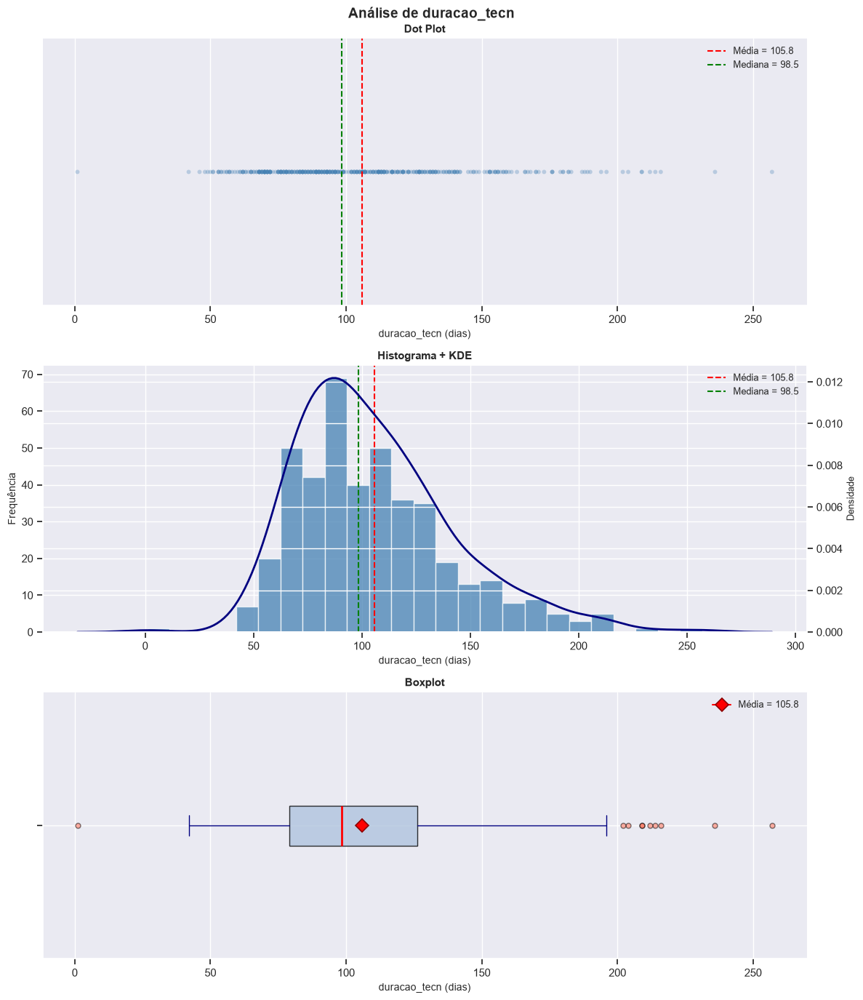
Estatísticas descritivas — duracao_tecn
=======================================================
N (obs.) : 428
Média : 105.81 dias
Mediana : 98.50 dias
D.Padrão : 36.11 dias
Mín : 1.00 dias
Q1 (25%) : 79.00 dias
Q3 (75%) : 126.25 dias
P90 : 155.30 dias
Máx : 257.00 dias
IQR : 47.25 dias
Assimetria : 0.92 dias
Curtose : 1.12 dias
======================================================================
Duração a partir do sorteio do rito
Estatísticas descritivas — duracao_sort
=======================================================
N (obs.) : 943
Média : 78.46 dias
Mediana : 80.00 dias
D.Padrão : 51.21 dias
Mín : 0.00 dias
Q1 (25%) : 42.00 dias
Q3 (75%) : 110.50 dias
P90 : 141.00 dias
Máx : 274.00 dias
IQR : 68.50 dias
Assimetria : 0.30 dias
Curtose : 0.01 dias
======================================================================
Duração total do processo (variável-alvo)
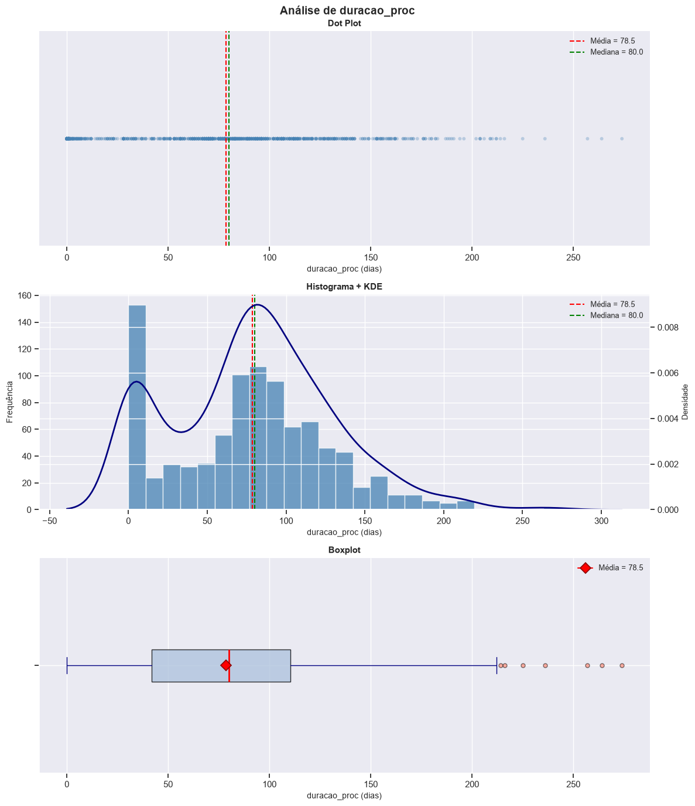
Estatísticas descritivas — duracao_proc
=======================================================
N (obs.) : 943
Média : 78.46 dias
Mediana : 80.00 dias
D.Padrão : 51.21 dias
Mín : 0.00 dias
Q1 (25%) : 42.00 dias
Q3 (75%) : 110.50 dias
P90 : 141.00 dias
Máx : 274.00 dias
IQR : 68.50 dias
Assimetria : 0.30 dias
Curtose : 0.01 dias
13. Comparação do Tempo de Tramitação por Grupo Experimental
Objetivo (Exercício 3 do pipeline-modelo): comparar a distribuição da variável duracao_proc entre os três grupos experimentais usando boxplots e histogramas, e aplicar o teste de Kruskal-Wallis para verificar se as medianas diferem estatisticamente.
Hipóteses (Kruskal-Wallis): - H₀: as medianas de duracao_proc são iguais nos três grupos (Controle, Tratamento_presencial, Tratamento_remoto). - H₁: pelo menos um grupo apresenta mediana diferente das demais.
Como interpretar: qual grupo tem maior mediana? Qual tem mais variabilidade? Há outliers concentrados em algum grupo?
# ── Função auxiliar: boxplots por grupo (ordenados pela mediana) ───────────def comparacao_grupos_boxplot(df: pd.DataFrame, var_quant: str, var_cat: str, unidade: str='', ordenar_mediana: bool=True) ->None:""" Boxplots comparativos de uma variável quantitativa entre grupos categóricos. Parâmetros ---------- df : DataFrame de entrada. var_quant : Variável quantitativa. var_cat : Variável categórica (grupos). unidade : Unidade de medida. ordenar_mediana: Se True, ordena grupos pela mediana crescente. """ df_tmp = df[[var_quant, var_cat]].dropna()# Ordenar pela mediana de cada grupoif ordenar_mediana: ordem = ( df_tmp.groupby(var_cat, observed=True)[var_quant] .median() .sort_values() .index.tolist() )else: ordem = df_tmp[var_cat].cat.categories.tolist() ifhasattr(df_tmp[var_cat], 'cat') else df_tmp[var_cat].unique().tolist() fig, ax = plt.subplots(figsize=(13, 6)) sns.boxplot(data=df_tmp, x=var_cat, y=var_quant, order=ordem, palette='Blues', ax=ax, width=0.55, medianprops=dict(color='red', linewidth=2), flierprops=dict(marker='o', markerfacecolor='tomato', alpha=0.4, markersize=4)) sns.stripplot(data=df_tmp, x=var_cat, y=var_quant, order=ordem, color='navy', alpha=0.18, size=3, ax=ax)# Anotar mediana de cada grupofor i, grupo inenumerate(ordem): med = df_tmp.loc[df_tmp[var_cat] == grupo, var_quant].median() ax.text(i, med + df_tmp[var_quant].max() *0.02,f'Med={med:.0f}', ha='center', va='bottom', fontsize=9, color='red') ax.set_xlabel(var_cat, fontsize=11) ax.set_ylabel(f'{var_quant} ({unidade})'if unidade else var_quant, fontsize=11) ax.set_title(f'{var_quant} por {var_cat}', fontsize=13, fontweight='bold') plt.xticks(rotation=20, ha='right') ax.spines['top'].set_visible(False) ax.spines['right'].set_visible(False) plt.tight_layout() plt.show()# Estatísticas por grupoprint(f'Estatísticas de {var_quant} por {var_cat}:') display( df_tmp.groupby(var_cat, observed=True)[var_quant] .describe(percentiles=[.25, .5, .75, .9]) .round(1) )def comparacao_grupos_histograma(df: pd.DataFrame, var_quant: str, var_cat: str, unidade: str='', bins: int=20) ->None:""" Histogramas em painel vertical (um por grupo) para comparação de distribuições. """ df_tmp = df[[var_quant, var_cat]].dropna() grupos = df_tmp[var_cat].unique() n =len(grupos) fig, axes = plt.subplots(n, 1, figsize=(12, 4* n), sharex=True)if n ==1: axes = [axes] paleta = sns.color_palette('Set2', n)for ax, grupo, cor inzip(axes, grupos, paleta): sub = df_tmp.loc[df_tmp[var_cat] == grupo, var_quant] ax.hist(sub, bins=bins, color=cor, edgecolor='white', alpha=0.85) ax.axvline(sub.mean(), color='red', linestyle='--', linewidth=1.5, label=f'Média={sub.mean():.0f}') ax.axvline(sub.median(), color='green', linestyle='--', linewidth=1.5, label=f'Med={sub.median():.0f}') ax.set_title(str(grupo), fontsize=11, fontweight='bold') ax.set_ylabel('Frequência', fontsize=9) ax.legend(fontsize=8) ax.spines['top'].set_visible(False) ax.spines['right'].set_visible(False) axes[-1].set_xlabel(f'{var_quant} ({unidade})'if unidade else var_quant, fontsize=11) fig.suptitle(f'Distribuição de {var_quant} por {var_cat}', fontsize=13, fontweight='bold') plt.tight_layout() plt.show()print('Funções de comparação por grupos definidas.')
Funções de comparação por grupos definidas.
# ── Comparação entre grupos experimentais ────────────────────────────────if {'grupo', 'duracao_proc'}.issubset(dados.columns):# Boxplotsprint('BOXPLOTS: duracao_proc por grupo experimental') comparacao_grupos_boxplot(dados, 'duracao_proc', 'grupo', unidade='dias')# Histogramasprint('HISTOGRAMAS: duracao_proc por grupo experimental') comparacao_grupos_histograma(dados, 'duracao_proc', 'grupo', unidade='dias')# ── Teste de Kruskal-Wallis ──────────────────────────────────────────── grupos_dados = [ g['duracao_proc'].dropna().valuesfor _, g in dados.dropna(subset=['grupo']).groupby('grupo', observed=True) ] nomes_grupos = [ k for k, _ in dados.dropna(subset=['grupo']).groupby('grupo', observed=True) ] H, p_kw = stats.kruskal(*grupos_dados)print('\nTESTE DE KRUSKAL-WALLIS')print('='*55)print(f' Grupos testados : {nomes_grupos}')print(f' Estatística H : {H:.4f}')print(f' p-valor : {p_kw:.4g}')if p_kw <0.05:print(' → Conclusão: Rejeita-se H₀ (p < 0,05). Há diferença significativa')print(' entre as medianas de pelo menos um par de grupos.')else:print(' → Conclusão: Não se rejeita H₀ (p ≥ 0,05). Sem evidência de')print(' diferença significativa entre as medianas dos grupos.')# ── Testes post-hoc (Mann-Whitney por par) ────────────────────────────if p_kw <0.05:print('\nTestes post-hoc (Mann-Whitney, dois a dois):')print('-'*55)from itertools import combinationsfor (n1, g1), (n2, g2) in combinations(zip(nomes_grupos, grupos_dados), 2): U, p_mw = stats.mannwhitneyu(g1, g2, alternative='two-sided') sig ='* sig.'if p_mw <0.05else'n.s.'print(f' {n1} vs {n2}: U={U:.1f}, p={p_mw:.4g}{sig}')
BOXPLOTS: duracao_proc por grupo experimental
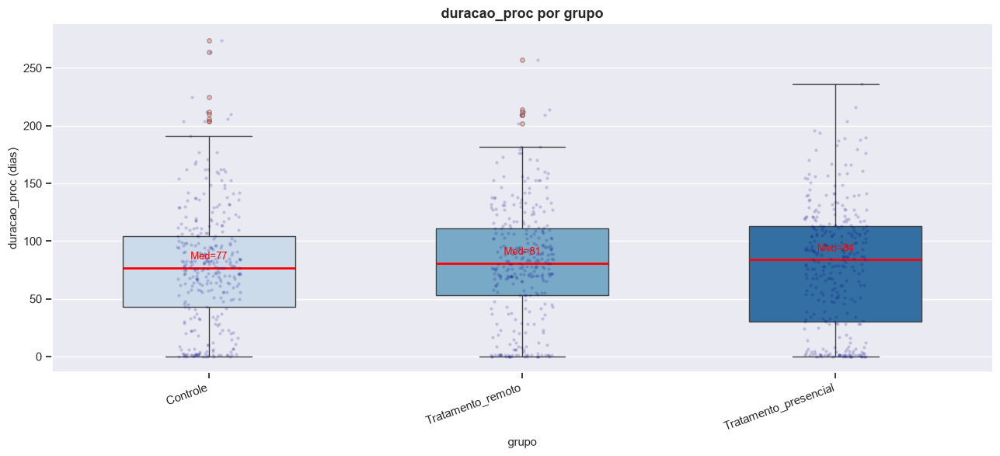
Estatísticas de duracao_proc por grupo:
count
mean
std
min
25%
50%
75%
90%
max
grupo
Controle
314.00
77.00
51.00
0.00
43.00
77.00
104.00
141.00
274.00
Tratamento_presencial
315.00
77.50
53.10
0.00
30.50
84.00
113.00
140.60
236.00
Tratamento_remoto
314.00
80.90
49.50
0.00
53.00
81.00
110.80
141.40
257.00
HISTOGRAMAS: duracao_proc por grupo experimental
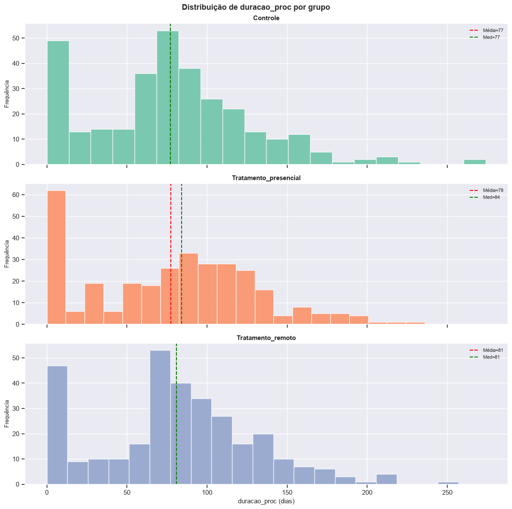
TESTE DE KRUSKAL-WALLIS
=======================================================
Grupos testados : ['Controle', 'Tratamento_presencial', 'Tratamento_remoto']
Estatística H : 1.4772
p-valor : 0.4778
→ Conclusão: Não se rejeita H₀ (p ≥ 0,05). Sem evidência de
diferença significativa entre as medianas dos grupos.
# ── Comparação entre processos Encerrados vs. Ativos ──────────────────────if {'status_norm', 'duracao_proc'}.issubset(dados.columns):print('BOXPLOTS: duracao_proc por status do processo') comparacao_grupos_boxplot(dados, 'duracao_proc', 'status_norm', unidade='dias') a = dados.loc[dados['status_norm'] =='Encerrado', 'duracao_proc'].dropna() b = dados.loc[dados['status_norm'] =='Ativo', 'duracao_proc'].dropna() U, p_mw = stats.mannwhitneyu(a, b, alternative='two-sided')print('\nTESTE DE MANN-WHITNEY — Encerrado vs. Ativo')print('='*55)print(f' H₀: medianas de duracao_proc iguais entre Encerrado e Ativo.')print(f' H₁: medianas diferentes.')print(f' U = {U:.2f} | p-valor = {p_mw:.4g}') conclusao ='Rejeita-se H₀'if p_mw <0.05else'Não se rejeita H₀'print(f' → {conclusao} (α = 0,05)')
BOXPLOTS: duracao_proc por status do processo
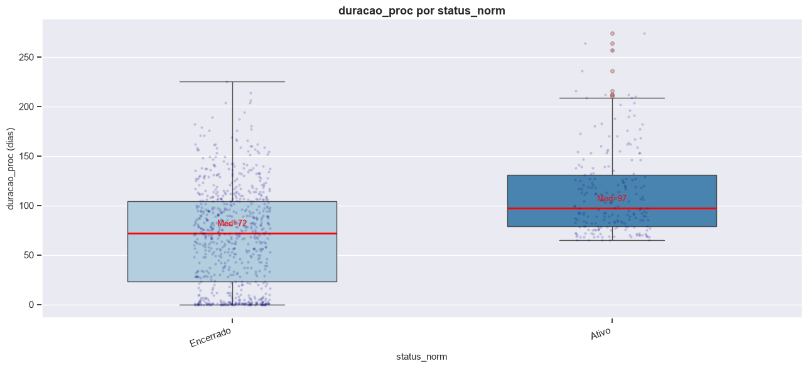
Estatísticas de duracao_proc por status_norm:
count
mean
std
min
25%
50%
75%
90%
max
status_norm
Ativo
209.00
112.20
42.90
65.00
79.00
97.00
131.00
173.60
274.00
Encerrado
734.00
68.90
49.30
0.00
23.00
72.00
104.00
132.70
225.00
TESTE DE MANN-WHITNEY — Encerrado vs. Ativo
=======================================================
H₀: medianas de duracao_proc iguais entre Encerrado e Ativo.
H₁: medianas diferentes.
U = 41437.50 | p-valor = 3.209e-24
→ Rejeita-se H₀ (α = 0,05)
14. Associação entre Variáveis Categóricas
Objetivo (Exercício 4 do pipeline-modelo): explorar associações entre pares de variáveis categóricas com tabela de contingência, gráfico mosaico (quando disponível) e teste qui-quadrado de independência.
Pares analisados: 1. grupo × status_norm — o grupo experimental influencia o encerramento? 2. grupo × teve_acordo_na_ac — a conciliação obrigatória gera mais acordos? 3. sentenca_std × grupo — o tipo de sentença difere por grupo?
Hipóteses (qui-quadrado): - H₀: as variáveis são independentes. - H₁: existe associação entre as variáveis.
Como interpretar: o gráfico mosaico mostra padrões que desviam do esperado sob independência? O p-valor indica associação significativa?
# ── Função auxiliar: análise de associação entre categóricas ──────────────def analise_associacao(df: pd.DataFrame, var1: str, var2: str) ->None:""" Tabela de contingência, proporções condicionais, qui-quadrado e mosaico. Parâmetros ---------- df : DataFrame de entrada. var1 : Primeira variável categórica (linhas). var2 : Segunda variável categórica (colunas). """ df_tmp = df[[var1, var2]].dropna()# Tabela de contingência tab_abs = pd.crosstab(df_tmp[var1], df_tmp[var2], margins=True) tab_prop = pd.crosstab(df_tmp[var1], df_tmp[var2], normalize='index') *100print(f'\nTabela de contingência: {var1} × {var2}')print('='*70) display(tab_abs)print(f'\nProporções por linha (%) — {var1} → {var2}:') display(tab_prop.round(1))# Qui-quadrado tab_raw = pd.crosstab(df_tmp[var1], df_tmp[var2]) chi2, p, gl, _ = stats.chi2_contingency(tab_raw)print(f'\nTeste Qui-Quadrado de Independência')print('='*70)print(f' H₀: {var1} e {var2} são independentes.')print(f' H₁: existe associação entre {var1} e {var2}.')print(f' χ² = {chi2:.4f} | gl = {gl} | p-valor = {p:.4g}')if p <0.05:print(' → Rejeita-se H₀: há associação significativa (p < 0,05).')else:print(' → Não se rejeita H₀: sem evidência de associação (p ≥ 0,05).')# Mosaico (se statsmodels disponível)if mosaic isnotNone:try: fig, ax = plt.subplots(figsize=(11, 6)) mosaic(df_tmp, [var1, var2], ax=ax, title=f'Mosaico: {var1} × {var2}', gap=0.015) plt.tight_layout() plt.show()exceptExceptionas e:print(f' (Mosaico não gerado: {e})')else:# Alternativa: heatmap da tabela de proporções plt.figure(figsize=(9, 4)) sns.heatmap(tab_prop.round(1), annot=True, fmt='.1f', cmap='Blues') plt.title(f'Heatmap de proporções: {var1} × {var2}') plt.tight_layout() plt.show()print('Função analise_associacao() definida.')
Função analise_associacao() definida.
# ── Par 1: grupo × status_norm ────────────────────────────────────────────# Pergunta: o grupo experimental influencia a probabilidade de encerramento?if {'grupo', 'status_norm'}.issubset(dados.columns): analise_associacao(dados, 'grupo', 'status_norm')
Tabela de contingência: grupo × status_norm
======================================================================
status_norm
Ativo
Encerrado
All
grupo
Controle
46
268
314
Tratamento_presencial
74
241
315
Tratamento_remoto
89
225
314
All
209
734
943
Proporções por linha (%) — grupo → status_norm:
status_norm
Ativo
Encerrado
grupo
Controle
14.60
85.40
Tratamento_presencial
23.50
76.50
Tratamento_remoto
28.30
71.70
Teste Qui-Quadrado de Independência
======================================================================
H₀: grupo e status_norm são independentes.
H₁: existe associação entre grupo e status_norm.
χ² = 17.5511 | gl = 2 | p-valor = 0.0001545
→ Rejeita-se H₀: há associação significativa (p < 0,05).
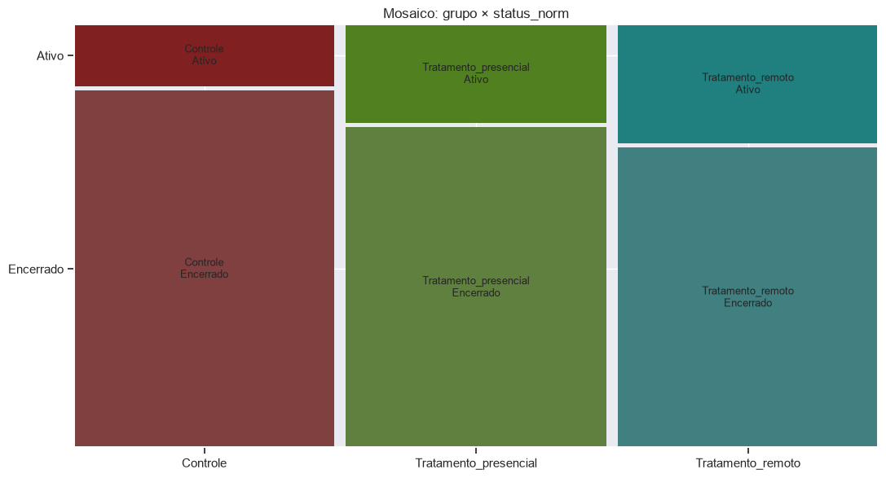
# ── Par 2: grupo × teve_acordo_na_ac ─────────────────────────────────────# Pergunta: a conciliação obrigatória (presencial ou remota) gera mais acordos?if {'grupo', 'teve_acordo_na_ac'}.issubset(dados.columns): analise_associacao(dados, 'grupo', 'teve_acordo_na_ac')
Tabela de contingência: grupo × teve_acordo_na_ac
======================================================================
teve_acordo_na_ac
Não
Sim
All
grupo
Controle
314
0
314
Tratamento_presencial
282
9
291
Tratamento_remoto
256
8
264
All
852
17
869
Proporções por linha (%) — grupo → teve_acordo_na_ac:
teve_acordo_na_ac
Não
Sim
grupo
Controle
100.00
0.00
Tratamento_presencial
96.90
3.10
Tratamento_remoto
97.00
3.00
Teste Qui-Quadrado de Independência
======================================================================
H₀: grupo e teve_acordo_na_ac são independentes.
H₁: existe associação entre grupo e teve_acordo_na_ac.
χ² = 9.8127 | gl = 2 | p-valor = 0.007399
→ Rejeita-se H₀: há associação significativa (p < 0,05).
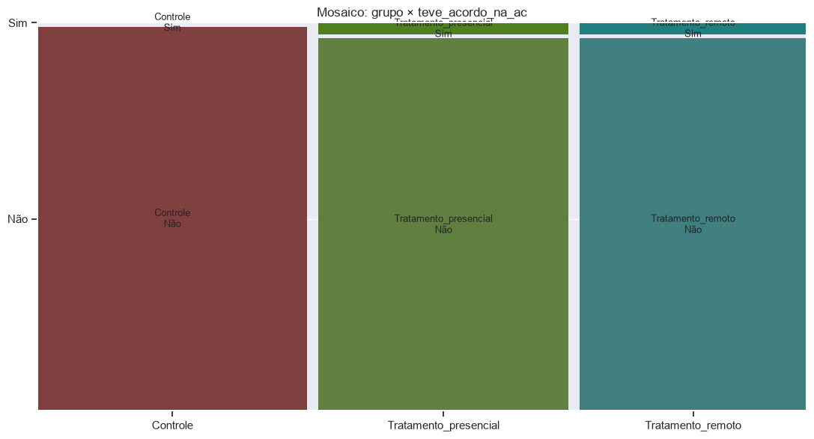
# ── Par 3: sentenca_std × grupo ───────────────────────────────────────────# Pergunta: o tipo de sentença proferida difere entre os grupos experimentais?if {'sentenca_std', 'grupo'}.issubset(dados.columns): analise_associacao(dados, 'sentenca_std', 'grupo')
Tabela de contingência: sentenca_std × grupo
======================================================================
grupo
Controle
Tratamento_presencial
Tratamento_remoto
All
sentenca_std
Decisão
6
11
9
26
Extinção Do Feito Com Homologação Do Acordo
21
25
35
81
Extinção Do Feito Com Julgamento De Mérito
162
96
83
341
Extinção Do Feito Sem Julgamento De Mérito
79
109
98
286
All
268
241
225
734
Proporções por linha (%) — sentenca_std → grupo:
grupo
Controle
Tratamento_presencial
Tratamento_remoto
sentenca_std
Decisão
23.10
42.30
34.60
Extinção Do Feito Com Homologação Do Acordo
25.90
30.90
43.20
Extinção Do Feito Com Julgamento De Mérito
47.50
28.20
24.30
Extinção Do Feito Sem Julgamento De Mérito
27.60
38.10
34.30
Teste Qui-Quadrado de Independência
======================================================================
H₀: sentenca_std e grupo são independentes.
H₁: existe associação entre sentenca_std e grupo.
χ² = 36.7120 | gl = 6 | p-valor = 2.004e-06
→ Rejeita-se H₀: há associação significativa (p < 0,05).
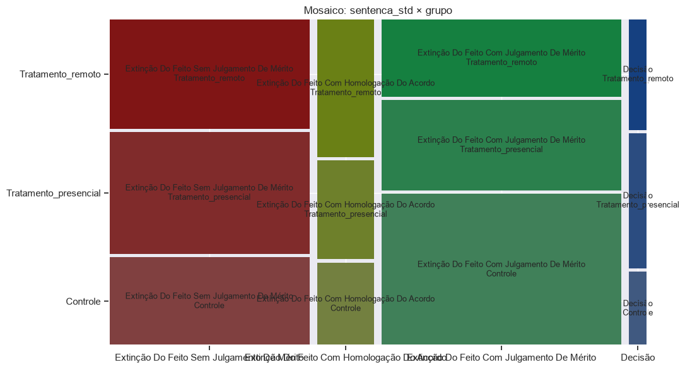
15. Relações entre Variáveis Quantitativas — Matriz de Correlação e Diagramas de Dispersão
Objetivo (Exercício 5 do pipeline-modelo): calcular a matriz de correlação de Spearman (preferida por ser robusta a assimetrias), criar um heatmap e analisar pares específicos com diagramas de dispersão e reta de regressão.
Importante: correlação ≠ causalidade. Uma relação estatística não implica causa e efeito.
# ── Função auxiliar: matriz de correlação ─────────────────────────────────def matriz_correlacao(df: pd.DataFrame, variaveis: list=None, metodo: str='spearman') -> pd.DataFrame:""" Calcula e visualiza a matriz de correlação com heatmap anotado. Parâmetros ---------- df : DataFrame de entrada. variaveis : Lista de colunas; se None, usa todas numéricas. metodo : 'pearson' ou 'spearman'. """ df_num = df[variaveis] if variaveis else df.select_dtypes(include='number') corr = df_num.corr(method=metodo) fig, ax = plt.subplots(figsize=(9, 7)) sns.heatmap(corr, annot=True, fmt='.2f', cmap='RdBu_r', center=0, square=True, linewidths=0.5, vmin=-1, vmax=1, ax=ax, cbar_kws={'shrink': 0.8}) ax.set_title(f'Matriz de Correlação ({metodo.capitalize()})', fontsize=13, fontweight='bold') plt.tight_layout() plt.show()# Pares com correlação forte (|r| > 0.5)print('\nCorrelações mais fortes (|r| > 0,5, excluindo diagonal):')print('='*60) encontrou =Falsefor i inrange(len(corr.columns)):for j inrange(i +1, len(corr.columns)): r = corr.iloc[i, j]ifabs(r) >0.5:print(f' {corr.columns[i]:25s} × {corr.columns[j]:25s}: r = {r:.3f}') encontrou =Trueifnot encontrou:print(' (Nenhum par com |r| > 0,5 encontrado)')return corrdef analise_dispersao(df: pd.DataFrame, var_x: str, var_y: str, unidade_x: str='', unidade_y: str='', cor_grupo: str=None) ->None:""" Diagrama de dispersão com reta de regressão e coeficientes de correlação. Parâmetros ---------- df : DataFrame. var_x : Variável no eixo x. var_y : Variável no eixo y. unidade_x : Unidade de medida de x. unidade_y : Unidade de medida de y. cor_grupo : Coluna categórica para colorir pontos por grupo (opcional). """ cols = [var_x, var_y] + ([cor_grupo] if cor_grupo else []) df_tmp = df[cols].dropna() r_pear = df_tmp[var_x].corr(df_tmp[var_y], method='pearson') r_spea = df_tmp[var_x].corr(df_tmp[var_y], method='spearman') slope, intercept, r_val, p_val, _ = stats.linregress(df_tmp[var_x], df_tmp[var_y]) fig, ax = plt.subplots(figsize=(12, 6))if cor_grupo and cor_grupo in df_tmp.columns: grupos = df_tmp[cor_grupo].unique() paleta = sns.color_palette('Set2', len(grupos))for grupo, cor inzip(grupos, paleta): sub = df_tmp[df_tmp[cor_grupo] == grupo] ax.scatter(sub[var_x], sub[var_y], alpha=0.5, s=40, color=cor, label=str(grupo), edgecolors='none') ax.legend(title=cor_grupo, fontsize=9)else: ax.scatter(df_tmp[var_x], df_tmp[var_y], alpha=0.4, s=40, color='steelblue', edgecolors='none')# Reta de regressão x_line = np.linspace(df_tmp[var_x].min(), df_tmp[var_x].max(), 200) ax.plot(x_line, slope * x_line + intercept, 'r-', linewidth=2, label=f'Reta: y = {slope:.4f}x + {intercept:.2f}') ax.legend(fontsize=9)# Caixa de informação info = (f'Pearson r = {r_pear:.3f}\n'f'Spearman ρ = {r_spea:.3f}\n'f'R² = {r_val**2:.3f}\n'f'p-valor = {p_val:.4g}') ax.text(0.04, 0.96, info, transform=ax.transAxes, fontsize=10, verticalalignment='top', bbox=dict(boxstyle='round', facecolor='lightyellow', alpha=0.8)) xlabel =f'{var_x} ({unidade_x})'if unidade_x else var_x ylabel =f'{var_y} ({unidade_y})'if unidade_y else var_y ax.set_xlabel(xlabel, fontsize=11) ax.set_ylabel(ylabel, fontsize=11) ax.set_title(f'Relação entre {var_x} e {var_y}', fontsize=13, fontweight='bold') ax.spines['top'].set_visible(False) ax.spines['right'].set_visible(False) plt.tight_layout() plt.show()# Interpretação textual abs_r =abs(r_pear) forca ='fraca'if abs_r <0.3else ('moderada'if abs_r <0.7else'forte') direcao ='positiva'if r_pear >0else'negativa'print(f'\nCorrelação de Pearson: {r_pear:.4f} — {forca} e {direcao}')print(f'Correlação de Spearman: {r_spea:.4f}')print(f'R² = {r_val**2:.4f} — {r_val**2*100:.1f}% da variação em {var_y} explicada por {var_x}')print(f'p-valor = {p_val:.4g} → {"significativo"if p_val <0.05else"não significativo"} (α=0,05)')print('Funções de correlação/dispersão definidas.')
Funções de correlação/dispersão definidas.
# ── Matriz de correlação de Spearman ─────────────────────────────────────COLS_CORR = [c for c in ['duracao_sent2', 'duracao_tecn', 'duracao_sort', 'duracao_proc']if c in dados.columns]print('MATRIZ DE CORRELAÇÃO — variáveis de duração (Spearman)')corr_matrix = matriz_correlacao(dados, variaveis=COLS_CORR, metodo='spearman')
MATRIZ DE CORRELAÇÃO — variáveis de duração (Spearman)
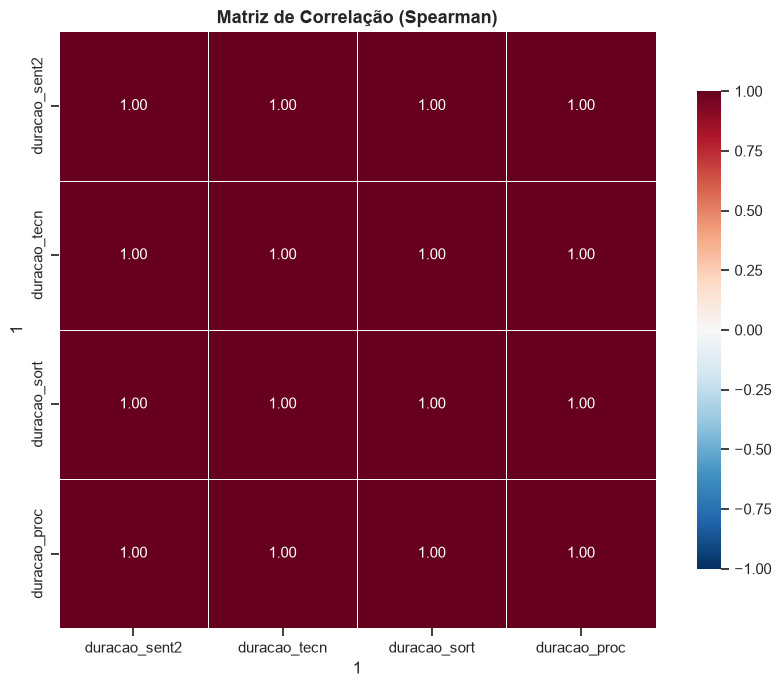
Correlações mais fortes (|r| > 0,5, excluindo diagonal):
============================================================
duracao_sent2 × duracao_tecn : r = 1.000
duracao_sent2 × duracao_sort : r = 1.000
duracao_sent2 × duracao_proc : r = 1.000
duracao_tecn × duracao_sort : r = 1.000
duracao_tecn × duracao_proc : r = 1.000
duracao_sort × duracao_proc : r = 1.000
Correlação de Pearson: 1.0000 — forte e positiva
Correlação de Spearman: 1.0000
R² = 1.0000 — 100.0% da variação em duracao_proc explicada por duracao_sort
p-valor = 0 → significativo (α=0,05)
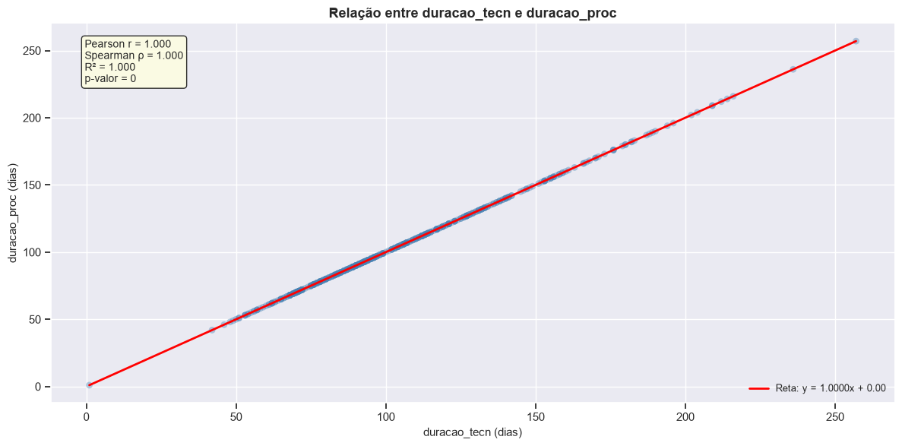
Correlação de Pearson: 1.0000 — forte e positiva
Correlação de Spearman: 1.0000
R² = 1.0000 — 100.0% da variação em duracao_proc explicada por duracao_tecn
p-valor = 0 → significativo (α=0,05)
16. O Tempo de Tramitação Segue Distribuição Normal?
Objetivo: avaliar a normalidade de duracao_proc com testes formais (Shapiro-Wilk e D’Agostino-Pearson) e inspeção visual (Q-Q plot).
A escolha entre testes paramétricos (t, ANOVA) e não paramétricos (Mann-Whitney, Kruskal-Wallis) depende do resultado.
Atenção (do ODT): o ODT de limitações alerta que distribuições de tempo processual são tipicamente right-skewed (assimétricas à direita), o que viola a premissa de normalidade. Por isso, os testes não paramétricos são preferidos neste estudo.
# ── Passo a passo desta célula ─────────────────────────────────────────────# 1) Amostrar até 500 obs. para evitar o problema de amostras grandes# (onde qualquer pequena assimetria rejeita a normalidade).# 2) Aplicar Shapiro-Wilk e D'Agostino-Pearson.# 3) Gerar Q-Q plot e histograma para inspeção visual.# ───────────────────────────────────────────────────────────────────────────if'duracao_proc'in dados.columns: serie_completa = dados['duracao_proc'].dropna()# Limitar amostra para os testes formais amostra = serie_completa.sample(min(len(serie_completa), 500), random_state=42)# Testes formais de normalidade sw_stat, sw_p = stats.shapiro(amostra) dag_stat, dag_p = stats.normaltest(amostra)print('TESTES DE NORMALIDADE — duracao_proc')print('='*55)print(f' N (amostra para teste) : {len(amostra)}')print(f' Shapiro-Wilk : W = {sw_stat:.4f} | p = {sw_p:.4g}')print(f' D\'Agostino-Pearson : K_quadrado = {dag_stat:.4f} | p = {dag_p:.4g}')for nome, p in [('Shapiro-Wilk', sw_p), ("D'Agostino-Pearson", dag_p)]:if p <0.05:print(f' → {nome}: rejeita normalidade (p < 0,05).')else:print(f' → {nome}: não rejeita normalidade (p ≥ 0,05).')# Visualizações fig, axes = plt.subplots(1, 2, figsize=(13, 5))# Q-Q plot stats.probplot(amostra, dist='norm', plot=axes[0]) axes[0].set_title('Q-Q Plot — Normal', fontsize=12, fontweight='bold')# Histograma com curva normal sobreposta mu, sigma = amostra.mean(), amostra.std() x_norm = np.linspace(amostra.min(), amostra.max(), 200) axes[1].hist(amostra, bins=25, density=True, color='steelblue', edgecolor='white', alpha=0.75, label='Observado') axes[1].plot(x_norm, stats.norm.pdf(x_norm, mu, sigma),'r-', linewidth=2, label=f'Normal(μ={mu:.1f}, sigma={sigma:.1f})') axes[1].set_xlabel('duracao_proc (dias)', fontsize=10) axes[1].set_ylabel('Densidade', fontsize=10) axes[1].set_title('Histograma vs. Curva Normal', fontsize=12, fontweight='bold') axes[1].legend(fontsize=9) axes[1].spines['top'].set_visible(False) axes[1].spines['right'].set_visible(False) plt.tight_layout() plt.show()print('\n→ Interpretação: dados de tempo processual são tipicamente assimétricos')print(' à direita (right-skewed). Prefira testes não paramétricos (Mann-Whitney,')print(' Kruskal-Wallis) e análise de sobrevivência (Kaplan-Meier).')
TESTES DE NORMALIDADE — duracao_proc
=======================================================
N (amostra para teste) : 500
Shapiro-Wilk : W = 0.9714 | p = 2.608e-08
D'Agostino-Pearson : K_quadrado = 3.0933 | p = 0.213
→ Shapiro-Wilk: rejeita normalidade (p < 0,05).
→ D'Agostino-Pearson: não rejeita normalidade (p ≥ 0,05).
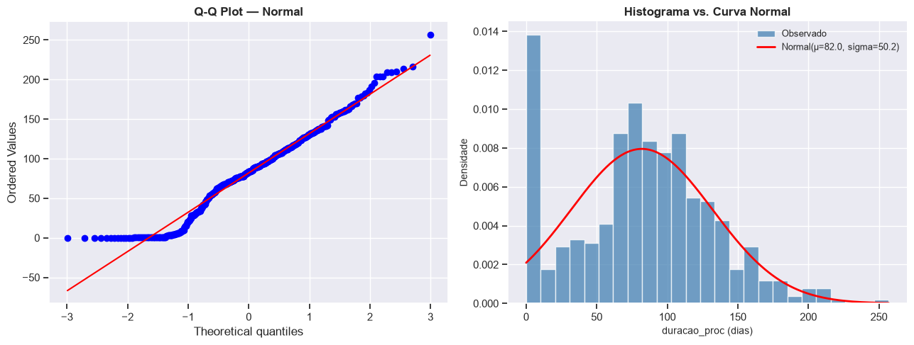
→ Interpretação: dados de tempo processual são tipicamente assimétricos
à direita (right-skewed). Prefira testes não paramétricos (Mann-Whitney,
Kruskal-Wallis) e análise de sobrevivência (Kaplan-Meier).
17. Testes de Hipóteses — do Simples ao Completo
Objetivo: formalizar os principais testes do estudo, da hipótese mais simples (proporção de encerramento) à comparação completa entre grupos.
Testes realizados:
Teste binomial (z) — a proporção de processos encerrados difere de 50%?
Mann-Whitney — o tempo de tramitação difere entre processos com e sem acordo?
Kruskal-Wallis — o tempo difere entre os três grupos experimentais? (já realizado na seção 13)
# ── Passo a passo desta célula ─────────────────────────────────────────────# 1) Teste binomial (z): proporção de encerrados vs. H₀: p = 0,5.# 2) Mann-Whitney: acordo na AC → tempo de tramitação.# ───────────────────────────────────────────────────────────────────────────# ── Teste 1: proporção de encerrados ──────────────────────────────────────if'status_norm'in dados.columns: n = dados['status_norm'].notna().sum() k = (dados['status_norm'] =='Encerrado').sum() p0 =0.50# hipótese nula: 50% de encerramento p_h = k / n se = np.sqrt(p0 * (1- p0) / n) z = (p_h - p0) / se p_val_z =2* (1- stats.norm.cdf(abs(z)))print('TESTE Z — Proporção de Processos Encerrados')print('='*55)print(f' H₀: p(encerrado) = {p0}')print(f' H₁: p(encerrado) ≠ {p0}')print(f' n = {n} | k encerrados = {k} | p̂ = {p_h:.3f}')print(f' z = {z:.3f} | p-valor = {p_val_z:.4g}')print(f' → {"Rejeita"if p_val_z <0.05else"Não rejeita"} H₀ (α = 0,05)')# ── Teste 2: tempo de tramitação — acordo vs. sem acordo na AC ─────────────if {'teve_acordo_na_ac', 'duracao_proc'}.issubset(dados.columns): com_acordo = dados.loc[dados['teve_acordo_na_ac'] =='Sim', 'duracao_proc'].dropna() sem_acordo = dados.loc[dados['teve_acordo_na_ac'] =='Não', 'duracao_proc'].dropna()# Adaptar para possíveis variações de encoding do 'Não'iflen(sem_acordo) ==0: sem_acordo = dados.loc[~dados['teve_acordo_na_ac'].isin(['Sim', np.nan]),'duracao_proc' ].dropna()iflen(com_acordo) >1andlen(sem_acordo) >1: U, p_mw = stats.mannwhitneyu(com_acordo, sem_acordo, alternative='two-sided')print('\nTESTE MANN-WHITNEY — Tempo por Resultado do Acordo na AC')print('='*55)print(f' H₀: medianas iguais (com acordo vs. sem acordo na AC).')print(f' H₁: medianas diferentes.')print(f' n(com acordo) = {len(com_acordo)} | mediana = {com_acordo.median():.1f} dias')print(f' n(sem acordo) = {len(sem_acordo)} | mediana = {sem_acordo.median():.1f} dias')print(f' U = {U:.2f} | p-valor = {p_mw:.4g}')print(f' → {"Rejeita"if p_mw <0.05else"Não rejeita"} H₀ (α = 0,05)')else:print('(Dados insuficientes para o teste de acordo na AC)')
TESTE Z — Proporção de Processos Encerrados
=======================================================
H₀: p(encerrado) = 0.5
H₁: p(encerrado) ≠ 0.5
n = 943 | k encerrados = 734 | p̂ = 0.778
z = 17.096 | p-valor = 0
→ Rejeita H₀ (α = 0,05)
TESTE MANN-WHITNEY — Tempo por Resultado do Acordo na AC
=======================================================
H₀: medianas iguais (com acordo vs. sem acordo na AC).
H₁: medianas diferentes.
n(com acordo) = 17 | mediana = 63.0 dias
n(sem acordo) = 852 | mediana = 81.0 dias
U = 6477.00 | p-valor = 0.4556
→ Não rejeita H₀ (α = 0,05)
18. Ajuste de Distribuições Probabilísticas
Objetivo: identificar qual distribuição paramétrica descreve melhor o tempo de tramitação (duracao_proc), comparando candidatos por AIC (Critério de Informação de Akaike).
Distribuições candidatas: - Log-Normal — frequentemente adequada para tempos processuais. - Gamma — generalização da exponencial; modela variáveis de tempo não negativas. - Weibull — amplamente usada em análise de sobrevivência e confiabilidade. - Exponencial — caso mais simples; taxa de encerramento constante.
Como interpretar: menor AIC → melhor ajuste relativo (penalizado pelo número de parâmetros).
# ── Passo a passo desta célula ─────────────────────────────────────────────# 1) Extrair valores positivos finitos de duracao_proc.# 2) Ajustar cada distribuição candidata (MLE).# 3) Calcular log-verossimilhança, AIC e BIC.# 4) Comparar graficamente os ajustes.# ───────────────────────────────────────────────────────────────────────────if'duracao_proc'in dados.columns: x = dados['duracao_proc'].dropna().values x = x[np.isfinite(x) & (x >0)] candidatos = {'Log-Normal' : stats.lognorm,'Gamma' : stats.gamma,'Weibull' : stats.weibull_min,'Exponencial' : stats.expon, } resultados, params_ajust = [], {}for nome, dist in candidatos.items(): params = dist.fit(x) params_ajust[nome] = params loglik = np.sum(dist.logpdf(x, *params)) k =len(params) n =len(x) aic =2* k -2* loglik bic = np.log(n) * k -2* loglik resultados.append({'Distribuição': nome, 'AIC': round(aic, 2),'BIC': round(bic, 2), 'LogLik': round(loglik, 2)}) tabela_fit = pd.DataFrame(resultados).sort_values('AIC').reset_index(drop=True)print('AJUSTE DE DISTRIBUIÇÕES — duracao_proc (ordenado por AIC)')print('='*60) display(tabela_fit) melhor = tabela_fit.loc[0, 'Distribuição']print(f'\n→ Melhor ajuste (menor AIC): {melhor}')# Gráfico comparativo de ajustes fig, ax = plt.subplots(figsize=(12, 5)) ax.hist(x, bins=30, density=True, color='steelblue', edgecolor='white', alpha=0.6, label='Dados observados') x_range = np.linspace(x.min(), np.percentile(x, 99), 300) cores = ['red', 'green', 'orange', 'purple']for (nome, dist), cor inzip(candidatos.items(), cores): params = params_ajust[nome] ax.plot(x_range, dist.pdf(x_range, *params), color=cor, linewidth=2, label=nome) ax.set_xlabel('duracao_proc (dias)', fontsize=11) ax.set_ylabel('Densidade', fontsize=11) ax.set_title('Ajuste de Distribuições Probabilísticas — Tempo de Tramitação', fontsize=13, fontweight='bold') ax.legend(fontsize=9) ax.spines['top'].set_visible(False) ax.spines['right'].set_visible(False) plt.tight_layout() plt.show()
AJUSTE DE DISTRIBUIÇÕES — duracao_proc (ordenado por AIC)
============================================================
Distribuição
AIC
BIC
LogLik
0
Weibull
9585.77
9600.19
-4789.89
1
Gamma
9611.60
9626.02
-4802.80
2
Log-Normal
9612.54
9626.96
-4803.27
3
Exponencial
9753.63
9763.24
-4874.81
→ Melhor ajuste (menor AIC): Weibull
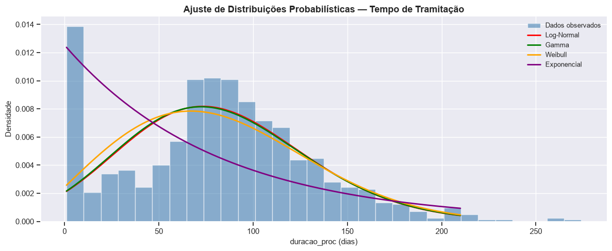
19. Modelos de Regressão — Tempo de Tramitação e Desfecho do Acordo
Objetivo: ajustar dois modelos complementares: 1. Regressão linear (OLS):duracao_proc em função das durações intermediárias e indicadores de acordo. 2. Regressão logística: probabilidade de encerramento (evento) em função das mesmas covariáveis.
Atenção: interprete coeficientes e significância sempre com leitura substantiva do contexto jurídico.
# ── Passo a passo desta célula ─────────────────────────────────────────────# 1) Preparar variáveis preditoras e codificar dummies.# 2) Ajustar OLS (variável resposta: duracao_proc).# 3) Ajustar Logit (variável resposta: evento = encerrado).# 4) Exibir resumo dos modelos.# ───────────────────────────────────────────────────────────────────────────if TEM_STATSMODELS and sm isnotNone:# ── Preparação das variáveis ─────────────────────────────────────────── colunas_modelo = ['duracao_proc', 'duracao_sort', 'duracao_sent2', 'evento'] cat_dummies = [c for c in ['grupo'] if c in dados.columns] df_reg = dados[colunas_modelo + cat_dummies].dropna(subset=['duracao_proc', 'evento']).copy()# Dummies para grupo experimental (referência: Controle)for cat in cat_dummies: df_reg = pd.get_dummies(df_reg, columns=[cat], drop_first=True, dtype=float)# Colunas preditoras para OLS preditoras = [c for c in df_reg.columnsif c notin ['duracao_proc', 'evento', 'duracao_sort', 'duracao_sent2'] and df_reg[c].notna().sum() >20] df_reg_ols = df_reg[['duracao_proc'] + preditoras].dropna()iflen(df_reg_ols) >30: y_ols = df_reg_ols['duracao_proc'] X_ols = sm.add_constant(df_reg_ols[preditoras]) ols = sm.OLS(y_ols, X_ols).fit()print('REGRESSÃO LINEAR (OLS) — variável resposta: duracao_proc')print(ols.summary())else:print('Dados insuficientes para OLS.')# ── Regressão logística ──────────────────────────────────────────────── df_reg_log = df_reg[['evento'] + preditoras].dropna()if df_reg_log['evento'].nunique() ==2andlen(df_reg_log) >50: y_log = df_reg_log['evento'] X_log = sm.add_constant(df_reg_log[preditoras]) logit = sm.Logit(y_log, X_log).fit(disp=False)print('\nREGRESSÃO LOGÍSTICA — variável resposta: evento (encerrado=1)')print(logit.summary())else:print('Dados insuficientes ou sem variação na resposta para Logit.')else:print('statsmodels não disponível. Instale com: pip install statsmodels')
20. Análise de Sobrevivência — Kaplan-Meier por Grupo Experimental
Objetivo: modelar o tempo até o encerramento do processo usando o estimador de Kaplan-Meier, que trata adequadamente os processos censurados (ativos ao fim da janela de observação).
Interpretação da curva: - Eixo y = probabilidade de o processo ainda estar em tramitação (não encerrado). - A curva cai quando um processo é encerrado; platos indicam períodos sem eventos (ou censuras). - Mediana de Kaplan-Meier = tempo em que 50% dos processos foram encerrados. - Curvas mais à esquerda indicam encerramento mais rápido.
Teste log-rank: compara as curvas de sobrevivência entre grupos (H₀: curvas iguais).
Contexto (do ODT): a janela de 218 dias e a presença de ~22% de processos censurados tornam o Kaplan-Meier imprescindível — a média simples subestima o tempo real dos processos ativos.
# ── Passo a passo desta célula ─────────────────────────────────────────────# 1) Verificar disponibilidade da biblioteca lifelines.# 2) Ajustar KaplanMeierFitter para cada grupo.# 3) Plotar curvas de sobrevivência com IC 95%.# 4) Aplicar teste log-rank (pairwise) entre grupos.# 5) Exibir medianas por grupo.# ───────────────────────────────────────────────────────────────────────────if TEM_LIFELINES and KaplanMeierFitter isnotNone:if {'duracao_proc', 'status_norm', 'grupo'}.issubset(dados.columns): km_df = dados[['duracao_proc', 'evento', 'grupo']].dropna( subset=['duracao_proc', 'evento', 'grupo'] ).copy() grupos_km = km_df['grupo'].unique() paleta_km =dict(zip(grupos_km, sns.color_palette('Set1', len(grupos_km)))) fig, ax = plt.subplots(figsize=(12, 6)) medianas = {}for grupo insorted(grupos_km): sub = km_df[km_df['grupo'] == grupo] kmf = KaplanMeierFitter() kmf.fit( durations=sub['duracao_proc'], event_observed=sub['evento'], label=str(grupo) ) kmf.plot_survival_function( ax=ax, ci_show=True, color=paleta_km[grupo], linewidth=2 ) medianas[grupo] = kmf.median_survival_time_ ax.axhline(0.5, color='gray', linestyle=':', linewidth=1.2, alpha=0.7, label='S(t) = 0,50 (mediana)') ax.set_xlabel('Dias desde a distribuição', fontsize=11) ax.set_ylabel('Probabilidade de permanência em tramitação', fontsize=11) ax.set_title('Curvas de Kaplan-Meier por Grupo Experimental\n''(processos censurados incluídos)', fontsize=13, fontweight='bold') ax.legend(fontsize=9) ax.spines['top'].set_visible(False) ax.spines['right'].set_visible(False) plt.tight_layout() plt.show()# Medianas de sobrevivência por grupoprint('\nMediana de Kaplan-Meier por grupo (dias até encerramento):')print('='*55)for grupo, med insorted(medianas.items(), key=lambda x: x[1]):print(f' {str(grupo):30s}: {med:.1f} dias')# Teste log-rank entre pares de gruposif logrank_test isnotNone:print('\nTeste Log-Rank (comparações par a par):')print('='*55)from itertools import combinationsfor g1, g2 in combinations(sorted(grupos_km), 2): sub1 = km_df[km_df['grupo'] == g1] sub2 = km_df[km_df['grupo'] == g2] resultado = logrank_test( sub1['duracao_proc'], sub2['duracao_proc'], event_observed_A=sub1['evento'], event_observed_B=sub2['evento'] ) sig ='* sig.'if resultado.p_value <0.05else'n.s.'print(f' {g1} vs {g2}:')print(f' p-valor = {resultado.p_value:.4g}{sig}')else:print('Biblioteca lifelines não disponível.')print('Instale no terminal com: uv add lifelines')print('Leia o README para mais informações.')print()# Fallback: ECDF simples por grupoif {'duracao_proc', 'grupo', 'evento'}.issubset(dados.columns): fig, ax = plt.subplots(figsize=(12, 5))for grupo, sub in dados.dropna(subset=['grupo', 'duracao_proc']).groupby('grupo', observed=True): encerrados = sub.loc[sub['evento'] ==1, 'duracao_proc'].sort_values() ecdf = np.arange(1, len(encerrados) +1) /len(sub) # proporção de encerrados ax.step(encerrados.values, ecdf, where='post', linewidth=2, label=str(grupo)) ax.set_xlabel('Dias desde a distribuição', fontsize=11) ax.set_ylabel('Proporção de processos encerrados', fontsize=11) ax.set_title('ECDF de Encerramento por Grupo Experimental\n''(substituto do Kaplan-Meier, sem IC)', fontsize=13, fontweight='bold') ax.legend(fontsize=9) ax.spines['top'].set_visible(False) ax.spines['right'].set_visible(False) plt.tight_layout() plt.show()
Biblioteca lifelines não disponível.
Instale no terminal com: uv add lifelines
Leia o README para mais informações.
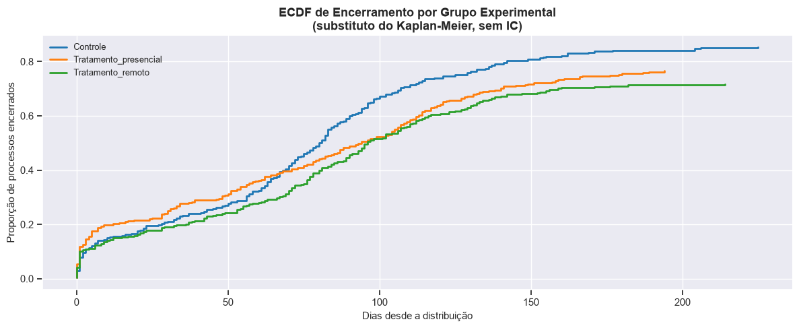
21. Janela de Observação e Truncamento Temporal
Objetivo: avaliar o impacto da janela de 218 dias sobre as estimativas de duração, identificar o período de distribuição dos processos e visualizar a ECDF com a marcação do limite da janela.
Contexto (do ODT):
> “A comparação entre a média histórica pré-intervenção (106,8 dias) e a média durante o experimento (75,2 dias) pressupõe que nada mais mudou no tribunal durante o período. A média informada de 75,2 dias engloba as três modalidades de rito simultaneamente. Sem a decomposição dessa média por grupo, não é possível aferir a relação de causalidade.”
# ── Passo a passo desta célula ─────────────────────────────────────────────# 1) Calcular o período de distribuição observado.# 2) Verificar quantos processos estão dentro/fora da janela de 218 dias.# 3) Plotar ECDF com marcação da janela de observação.# 4) Comparar médias simples vs. medianas por grupo.# ───────────────────────────────────────────────────────────────────────────if {'dt_distribuicao', 'duracao_proc'}.issubset(dados.columns): dt_ini = dados['dt_distribuicao'].min() dt_fim = dados['dt_distribuicao'].max() janela_calc = (dt_fim - dt_ini).days if pd.notna(dt_ini) and pd.notna(dt_fim) else np.nanprint('JANELA DE OBSERVAÇÃO')print('='*55)print(f' Início da distribuição : {dt_ini.date() if pd.notna(dt_ini) else"?"}')print(f' Fim da distribuição : {dt_fim.date() if pd.notna(dt_fim) else"?"}')print(f' Amplitude (dias) : {janela_calc}')print(f' Janela relatada no ODT : {JANELA_DIAS} dias')print()# Percentis da duraçãoprint('Percentis de duracao_proc:')print(dados['duracao_proc'].describe(percentiles=[.25, .5, .75, .9, .95]).round(1))# ECDF global fig, ax = plt.subplots(figsize=(12, 5)) serie_ord = dados['duracao_proc'].dropna().sort_values() ecdf_y = np.arange(1, len(serie_ord) +1) /len(serie_ord) ax.step(serie_ord.values, ecdf_y, where='post', color='steelblue', linewidth=2, label='ECDF global') ax.axvline(JANELA_DIAS, color='red', linestyle='--', linewidth=1.5, label=f'Janela de {JANELA_DIAS} dias')# Proporção de processos dentro da janela prop_dentro = (serie_ord <= JANELA_DIAS).mean() ax.annotate(f'{prop_dentro*100:.1f}% ≤ {JANELA_DIAS} dias', xy=(JANELA_DIAS, prop_dentro), xytext=(JANELA_DIAS -40, prop_dentro -0.08), fontsize=10, color='red', arrowprops=dict(arrowstyle='->', color='red')) ax.set_xlabel('Duração do processo (dias)', fontsize=11) ax.set_ylabel('Proporção acumulada', fontsize=11) ax.set_title('ECDF da Duração com Marcação da Janela de Observação', fontsize=13, fontweight='bold') ax.legend(fontsize=9) ax.spines['top'].set_visible(False) ax.spines['right'].set_visible(False) plt.tight_layout() plt.show()# Médias vs. medianas desagregadas por grupoif'grupo'in dados.columns:print('\nMédia vs. Mediana de duracao_proc por grupo (todos os processos):') display( dados.groupby('grupo', observed=True)['duracao_proc'] .agg(n='count', media='mean', mediana='median', p90=lambda s: s.quantile(.9)) .round(1) )print('\n→ Interprete com cautela: a média é influenciada pelos processos longos')print(' (maioria dos quais são censurados). A mediana é mais robusta.')
JANELA DE OBSERVAÇÃO
=======================================================
Início da distribuição : 2026-01-01
Fim da distribuição : 2026-08-03
Amplitude (dias) : 214
Janela relatada no ODT : 218 dias
Percentis de duracao_proc:
count 943.00
mean 78.50
std 51.20
min 0.00
25% 42.00
50% 80.00
75% 110.50
90% 141.00
95% 162.00
max 274.00
Name: duracao_proc, dtype: float64
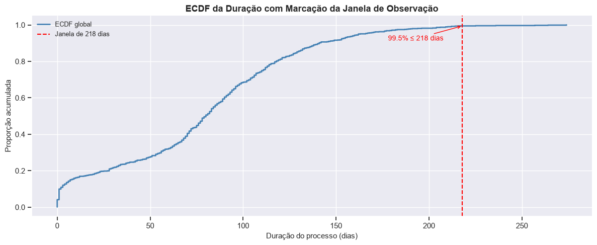
Média vs. Mediana de duracao_proc por grupo (todos os processos):
n
media
mediana
p90
grupo
Controle
314
77.00
77.00
141.00
Tratamento_presencial
315
77.50
84.00
140.60
Tratamento_remoto
314
80.90
81.00
141.40
→ Interprete com cautela: a média é influenciada pelos processos longos
(maioria dos quais são censurados). A mediana é mais robusta.
22. Complementação Metodológica — Extensão do Pipeline
Objetivo: preparar o dataset para integração com bases externas (ex.: DataJud / TJRN) e verificar o estado de prontidão para análises de escala ampliada, seguindo o checklist do arquivo-modelo rafaelcc_ed1.ipynb.
Esta seção permanece como bloco de extensão — não executa análises adicionais, mas documenta o ponto de acoplamento para trabalhos futuros.
# ── Checklist de prontidão para extensão do pipeline ─────────────────────checklist = {'1_chave_de_linkage_definida' : 'numero_do_processo'in dados.columns,'2_variavel_tempo_harmonizada' : 'duracao_proc'in dados.columns,'3_status_evento_harmonizado' : 'status_norm'in dados.columns,'4_grupos_experimentais_harmonizados' : 'grupo'in dados.columns,'5_indicador_censura_criado' : 'evento'in dados.columns,'6_dataset_limpo_exportado' : (SAIDA_DIR /'estcaso_4jec_natal_limpo.xlsx').exists(),'7_lifelines_disponivel' : TEM_LIFELINES,'8_statsmodels_disponivel' : TEM_STATSMODELS,}check_df = pd.Series(checklist, name='status')check_df = check_df.to_frame()check_df['avaliação'] = check_df['status'].map({True: 'PRONTO', False: 'PENDENTE'})print('CHECKLIST PARA EXTENSÃO DO PIPELINE')print('='*55)display(check_df)# Espaço reservado para integração com bases externas# ─────────────────────────────────────────────────────────────────────────────# Para acoplamento com DataJud ou outras bases do TJRN:# 1) Carregar base externa com a mesma chave 'numero_do_processo'.# 2) Fazer merge com 'dados' via pd.merge(dados, base_ext, on='numero_do_processo').# 3) Repetir as análises das seções 13-20 com as novas variáveis.# ─────────────────────────────────────────────────────────────────────────────print('\nBloco de extensão documentado. Pronto para acoplamento com bases externas.')
CHECKLIST PARA EXTENSÃO DO PIPELINE
=======================================================
status
avaliação
1_chave_de_linkage_definida
True
PRONTO
2_variavel_tempo_harmonizada
True
PRONTO
3_status_evento_harmonizado
True
PRONTO
4_grupos_experimentais_harmonizados
True
PRONTO
5_indicador_censura_criado
True
PRONTO
6_dataset_limpo_exportado
True
PRONTO
7_lifelines_disponivel
False
PENDENTE
8_statsmodels_disponivel
True
PRONTO
Bloco de extensão documentado. Pronto para acoplamento com bases externas.
23. Síntese e Conclusões
Objetivo: consolidar os principais achados do estudo de caso em um resumo automático e orientar as conclusões substantivas.
Questões norteadoras
1. Perfil dos processos
Como se distribui o tempo de tramitação? Quais grupos concentram mais processos encerrados?
2. Eficácia da conciliação obrigatória
Os grupos com AC obrigatória (presencial e remota) apresentam menor tempo de tramitação em relação ao grupo controle?
3. Acordos e tipo de sentença
A presença de acordo na AC está associada a um tipo diferente de sentença? O grupo com AC remota celebra mais acordos?
4. Limitações metodológicas (do ODT)
- A janela de 218 dias introduz censura à direita significativa (~22% dos processos). - A seleção de um único juizado limita a validade externa (generalização). - O efeito Hawthorne e a contaminação intergrupos são riscos operacionais documentados. - A média simples é enganosa sem desagregação por grupo e sem tratamento da censura.
# ── Resumo automático dos principais indicadores do estudo ────────────────sintese = {}# Tamanho da amostra e censuraif'duracao_proc'in dados.columns: sintese['n_processos_total'] =int(dados['duracao_proc'].notna().sum()) sintese['duracao_mediana_dias'] =float(dados['duracao_proc'].median()) sintese['duracao_media_dias'] =round(float(dados['duracao_proc'].mean()), 1) sintese['duracao_p90_dias'] =float(dados['duracao_proc'].quantile(.9))if'status_norm'in dados.columns: n_total = dados['status_norm'].notna().sum() sintese['prop_encerrados_%'] =round((dados['status_norm'] =='Encerrado').sum() / n_total *100, 1) sintese['prop_censurados_%'] =round((dados['status_norm'] =='Ativo').sum() / n_total *100, 1)if'grupo'in dados.columns: sintese['n_grupos_experimentais'] =int(dados['grupo'].nunique(dropna=True))for grupo, sub in dados.dropna(subset=['grupo']).groupby('grupo', observed=True): sintese[f'mediana_dias_{grupo}'] =float(sub['duracao_proc'].median())if'teve_acordo_na_ac'in dados.columns: n_ac = dados['teve_acordo_na_ac'].notna().sum() n_acordo = (dados['teve_acordo_na_ac'] =='Sim').sum() sintese['prop_acordos_na_ac_%'] =round(n_acordo / n_ac *100, 1) if n_ac >0else np.nanprint('RESUMO DO ESTUDO DE CASO — 4.º JEC DE NATAL/RN')print('='*60)for k, v in sintese.items():print(f' {k:40s}: {v}')print()print('Arquivos exportados:')print(f' XLSX : {SAIDA_DIR /"estcaso_4jec_natal_limpo.xlsx"}')print(f' CSV : {SAIDA_DIR /"estcaso_4jec_natal_limpo.csv"}')
Planilha de controle de processos — 4.º JEC de Natal/RN, atualização de 07/10/2026.
Alencar, P.G.M.; Neves, C.B. — Eficácia da Conciliação Obrigatória na Tramitação Processual: um Experimento no 4.º JEC de Natal (ENAJUS 2026, DOCX).
Documento de limitações — Limitações metodológicas do experimento 4.º JEC Natal (ODT).
Referências metodológicas
Pipeline-modelo:rafaelcc_ed1.ipynb
Estudo-base:estcaso_ip.ipynb
Bibliotecas Python utilizadas
Biblioteca
Finalidade
pandas
Manipulação e análise de dados
numpy
Computação numérica
matplotlib
Criação de gráficos
seaborn
Visualizações estatísticas
scipy.stats
Testes estatísticos e ajuste de distribuições
statsmodels
Regressão linear e logística, gráfico mosaico
lifelines
Análise de sobrevivência (Kaplan-Meier, log-rank)
Leituras de apoio
Barbetta; Reis; Bornia (2025) — Estatística para Cursos de Engenharia e Informática, cap. 3.
Moore; Notz; Fligner (2023) — A Estatística Básica e sua Prática, caps. 1–2.
Kaplan, E.L.; Meier, P. (1958) — Nonparametric estimation from incomplete observations. JASA.
Cox, D.R. (1972) — Regression models and life-tables. JRSS-B.
Notas Finais
Este notebook apresentou um pipeline analítico completo para o estudo de caso do 4.º JEC de Natal/RN, estruturado em 23 seções que percorrem o ciclo:
preparação → limpeza → tipagem → auditoria → EDA categórica → EDA quantitativa
→ comparação de grupos → associação → correlação → normalidade
→ testes de hipóteses → ajuste de distribuições → regressão
→ sobrevivência (Kaplan-Meier) → janela de observação → síntese
Principais lições metodológicas:
1. Censura importa — ignorar os processos ativos subestima o tempo de tramitação real.
2. Média ≠ mediana — dados de tempo são assimétricos; prefira medianas e análise de sobrevivência.
3. Desagregar por grupo — médias globais mascaram diferenças entre Controle e Tratamentos.
4. Correlação ≠ causalidade — o delineamento experimental (com sorteio) fortalece a inferência, mas não elimina todos os confundidores.
5. Validade externa limitada — resultados do 4.º JEC não se generalizam automaticamente para os demais juizados.